MitiruEngine
MitiruEngineSAMPLES
サンプル集
機能をひとつずつ見せる同梱サンプルです。どれも実行画面をそのまま撮ったもの。番号順にたどると、図形・文字・入力から、音・カメラ・HTML の画面・3D までひととおり触れます。各章は mitiru new で作るプロジェクトと同じ、ひとつの *.cpp です。
ようこそ
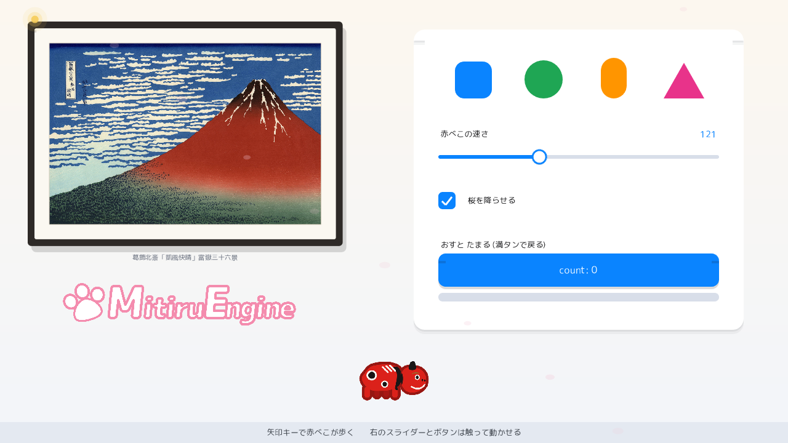
examples/welcome）。画像・文字・図形・UI・動きを 1 画面に。額装した浮世絵（北斎「凱風快晴」）とロゴ、右の白いカードに触って試せる図形・スライダー・チェックボックス・ボタンを並べた 1 画面です。手前の赤べこは矢印キーで歩き（速さは右のスライダーに連動）、マウスには蛍がついてきて、UI 以外をクリックすると波紋が広がります。draw の中で部品を順に重ねて 1 画面を組み立てます。
使う道具: drawSprite / drawRoundedRect / drawTextInRect / in.move / in.mouseDown / Timer::every
examples/welcome/welcome_dll.cpp ── 全 455 行。mitiru new で作るプロジェクトの src/main.cpp をこれ 1 つに置き換えれば、そのまま mitiru run で動きます。GitHub ↗
// welcome — MitiruEngine の第一章。1 画面で「画像・文字・図形・UI 操作・動き」をまとめて見せる歓迎デモ。 // 実行すると: 左に額装した赤富士 (画像) とブランドロゴ、右に触って試せる小さな機能見本 (図形の並び・ // ドラッグできるスライダー・押せるボタン) を清潔に並べる。手前の赤べこは矢印キーで歩き、 // マウスには蛍がついてきて、ボタン/スライダー以外をクリックすると波紋が広がる。 // 使う機能: Texture::fromFile / drawSprite (画像) / drawGradientRect (背景) / drawRoundedRect・ // fillCircle・drawTriangle (図形) / drawTextInRect (文字) / in.move() (矢印) / // in.mouseX/Y・mouseDown (マウスで UI 操作) #include <mitiru.hpp> #include <mitiru/render/Texture.hpp> // 画像 (Texture) を読み込んで drawSprite で描くため #include <algorithm> // std::min — 蛍がマウスへ寄る割合の頭打ち #include <cmath> // std::sin / std::fmod — ゆれ・舞い散りに使う #include <cstdio> // std::snprintf — スライダーの値・ボタンの回数を文字にするため #include "../common/chapter_hud.hpp" // 共通パレット theme::k... (白系テーマの色) を使う using namespace mitiru; constexpr float kScreenW = 1280.0f; // 画面は常に 1280x720 constexpr float kScreenH = 720.0f; // 画像 (Texture) は内部に可変長のピクセルを持つので、ゲームの状態 struct には入れられない // (状態は「まるごとコピーできる単純な値」だけに保つ決まりのため)。そこで画像はこのファイル直下の // 変数へ開始時に一度だけ読み込む。読み込みに失敗しても value_or で「空の画像」になるだけで落ちない。 static const render::Texture kFuji = render::Texture::fromFile("welcome/assets/images/fuji.png").value_or(render::Texture{}); // ブランドロゴ (i の点が満ちゆく月のワードマーク)。左ゾーンの下に据えるタイトル代わり。 static const render::Texture kLogo = render::Texture::fromFile("welcome/assets/images/logo.png").value_or(render::Texture{}); // 手前で歩かせる赤べこ (会津の張り子牛)。4 コマの歩行アニメ。 static const render::Texture kBeko[4] = { render::Texture::fromFile("welcome/assets/sprites/akabeko_0.png").value_or(render::Texture{}), render::Texture::fromFile("welcome/assets/sprites/akabeko_1.png").value_or(render::Texture{}), render::Texture::fromFile("welcome/assets/sprites/akabeko_2.png").value_or(render::Texture{}), render::Texture::fromFile("welcome/assets/sprites/akabeko_3.png").value_or(render::Texture{}), }; // ── 見た目の寸法 ─────────────────────────────────────────────────────────── constexpr float kArtScale = 0.46f; // 赤富士の表示倍率 (高解像度を 1 未満で縮小 = くっきり) constexpr float kMatte = 24.0f; // 絵のまわりの余白 (生成りのマット) constexpr float kFrameBand = 11.0f; // その外側の額縁 (焦茶) の太さ constexpr float kArtX = 80.0f; // 額の中の絵の左上 X (額縁はこれより 35px 外へ広がる) constexpr float kArtY = 70.0f; // 額の中の絵の左上 Y constexpr float kLogoW = 420.0f; // ロゴの表示幅 (高さは元画像の比から決める) constexpr float kBekoScale = 0.42f; // 赤べこの表示倍率 constexpr int kPetals = 10; // 舞う桜の花びらの数 (控えめに) // ── 右ゾーン「触って試す」カード ────────────────────────────────────────── // 図形の並び → スライダー → チェックボックス → [ボタン＋ゲージの組] を、白いカードに // 載せる。各組は同じ左右のガイド (kColL〜kColR) にそろえ、組の間は均等な余白で置く。 // ボタンとゲージだけは 1 組に見えるよう間を詰める。カード高は左の額装赤富士の列と釣り合う。 constexpr float kCardX = 672.0f, kCardY = 48.0f, kCardW = 536.0f, kCardH = 488.0f; constexpr float kCardR = 18.0f; // カードの角丸 constexpr float kCardPad = 40.0f; // カード内の左右の余白 constexpr float kColL = kCardX + kCardPad; // 全組共通の左ガイド (= 712) constexpr float kColR = kCardX + kCardW - kCardPad; // 共通の右ガイド (= 1168) constexpr float kColW = kColR - kColL; // 段の横幅 (= 456) // 1 段目: 基本図形 4 つ。列幅を 4 等分した各セルの中心に、下端をそろえて置く。 constexpr float kShapeBottom = 160.0f; // 4 図形の共通の下端 constexpr float kShapeCx[4] = { // 各セルの中心 X (等間隔) kColL + kColW * 0.125f, kColL + kColW * 0.375f, kColL + kColW * 0.625f, kColL + kColW * 0.875f}; // 2 段目: スライダー。1 行目にラベル (左) と値 (右)、その下に列いっぱいの溝を敷く。 constexpr float kSliderRowY = 206.0f; // ラベル/値の行の上端 constexpr float kTrackY = 255.0f; // 溝の中心 Y constexpr float kTrackLeft = kColL; // 溝は列いっぱい constexpr float kTrackLen = kColW; // 3 段目: チェックボックス「桜を降らせる」。左の四角 + 右にラベル。桜の描画を on/off する。 constexpr float kCheckX = kColL; // チェック四角の左上 X (= kColL) constexpr float kCheckY = 312.0f; // チェック四角の左上 Y constexpr float kCheckSize = 28.0f; // 四角の一辺 // 4 段目: ボタン＋ゲージの組。見出し → ボタン → ゲージ を近づけて 1 組に見せる。 constexpr float kSetLabelY = 386.0f; // 組の見出しの行の上端 constexpr float kBtnX = kColL, kBtnW = kColW; constexpr float kBtnY = 412.0f, kBtnH = 54.0f; // ボタン (見出しのすぐ下) constexpr float kGaugeY = 483.0f; // ゲージ(溝)の中心 Y (ボタンのすぐ下) // ── 落ち着いた和の配色 (theme に無い色はここで名前をつける)。── constexpr Color kBgTop = hex(0xFCF7EF); // 背景グラデの上 (ほんのり暖かい生成り) constexpr Color kBgBottom = hex(0xF2F5FA); // 背景グラデの下 (涼しい紙白) constexpr Color kFrameWood = hex(0x2E2A27); // 額縁 (焦茶) constexpr Color kMatteCream = hex(0xFBF8F1); // マットの白 (生成り) constexpr Color kBevel = hex(0xD8CFBE); // 絵ぎわの細い見切り線 constexpr Color kPanelFill = hex(0xFFFFFF); // 右パネルの下地 (白) constexpr Color kVermilion = hex(0xC8352B); // 朱 (波紋の色) constexpr Color kBluePress = hex(0x0060D8); // ボタンを押した瞬間の濃い青 constexpr Color kSakura = hex(0xF3C4D4); // 桜の花びら (淡い桃) constexpr Color kFirefly = hex(0xF6CC5A); // マウスを追う蛍 (やわらかい金) constexpr Color kGaugeDrain = hex(0xF6C98A); // ゲージが満タンから減っている最中の淡い橙 (リセット中) constexpr Color kDropShadow = rgba(20, 20, 24, 40); // うすい落ち影 constexpr float kRippleLife = 0.9f; // クリックの波紋が消えるまでの秒数 struct Welcome00 { // 状態はすべて単純な値 (まるごとコピーできる)。ポインタや可変長の配列は持たない。 float t = 0.0f; float bekoX = 640.0f, bekoY = 612.0f; // 赤べこの中心 bool faceLeft = false; // 進む向き (左を向いているか) Timer walk; // 歩行アニメ用タイマー int step = 0; // 今の歩行コマ (0〜3) float fx = kScreenW * 0.5f, fy = kScreenH * 0.5f; // マウスを追う蛍の位置 (少し遅れて寄る) struct Ripple { float x = 0.0f, y = 0.0f, age = 9.0f; }; // age が kRippleLife 以上 = 消えている Ripple ripples[5] = {}; // クリックで出す波紋 (5 枠を使い回す) bool prevClick = false; // 前フレームの左ボタン (押した瞬間だけ反応するため) float sliderT = 0.36f; // スライダーの位置 (0=左端, 1=右端)。値 speed=120 あたりから始める int count = 0; // ボタンを押した回数 ("count: N" 表示用) bool btnDown = false; // 今マウスがボタンを押しているか (見た目を少しへこませる用) bool petalsOn = true; // チェックボックスの状態 (on = 桜を降らせる) float gauge = 0.0f; // ゲージの溜まり具合 (0=空, 1=満タン) bool draining = false; // 満タン後、0 へ減っている最中か (この間は溜められない) float holdT = 0.0f; // 満タンを見せる短い静止の経過秒 static float clampf(float v, float lo, float hi) { return v < lo ? lo : (v > hi ? hi : v); } // マウスがボタンの矩形の中にいるか。 static bool inButton(float x, float y) { return x >= kBtnX && x <= kBtnX + kBtnW && y >= kBtnY && y <= kBtnY + kBtnH; } // マウスがスライダーの「掴める範囲」にいるか (溝の少し外まで含めてハンドルを掴みやすくする)。 static bool inSliderGrab(float x, float y) { return x >= kTrackLeft - 16.0f && x <= kTrackLeft + kTrackLen + 16.0f && y >= kTrackY - 18.0f && y <= kTrackY + 18.0f; } // マウスがチェックボックスの上にいるか (四角とラベルの行ぜんたいを押せる範囲にする)。 static bool inCheckbox(float x, float y) { return x >= kCheckX - 4.0f && x <= kCheckX + kCheckSize + 180.0f && y >= kCheckY - 6.0f && y <= kCheckY + kCheckSize + 6.0f; } void update(Input in, float dt) { t += dt; // ── 矢印キー・WASD・パッドで赤べこを歩かせる ── const Stick m = in.move(); // 全デバイスの入力を 1 つのベクトルにまとめてくれる const float bekoSpeed = 20.0f + sliderT * 280.0f; // 歩く速さは右のスライダーで決まる (連動) bekoX += m.x * bekoSpeed * dt; bekoY += m.y * bekoSpeed * dt; if (m.x < -0.1f) { faceLeft = true; } // 左へ動いたら左向き else if (m.x > 0.1f) { faceLeft = false; } // 右へ動いたら右向き bekoX = clampf(bekoX, 90.0f, kScreenW - 90.0f); bekoY = clampf(bekoY, 588.0f, 636.0f); // 手前の帯の中だけ歩く (パネルや額と重ならない) const bool moving = (m.x * m.x + m.y * m.y) > 0.01f; if (moving) { if (walk.every(0.13f, dt)) { step = (step + 1) % 4; } } else { step = 0; } // ── マウスの位置と左ボタン ── const float mx = in.mouseX(), my = in.mouseY(); const bool down = in.mouseDown(0); const bool clickEdge = down && !prevClick; // 押した瞬間だけ true (押しっぱなしでは反応しない) const bool onSlider = inSliderGrab(mx, my); const bool onButton = inButton(mx, my); const bool onCheckbox = inCheckbox(mx, my); // マウスを追う蛍 — 少し遅れてカーソルへ寄るので「ついてくる」ように見える。 const float k = std::min(1.0f, dt * 6.5f); fx += (mx - fx) * k; fy += (my - fy) * k; // スライダー: ハンドルを掴んでいる間、マウスの X に合わせて位置 (0〜1) を更新する。 if (down && onSlider) { sliderT = clampf((mx - kTrackLeft) / kTrackLen, 0.0f, 1.0f); } // ボタン: 押した瞬間に回数を数え、ゲージを 0.1 溜める。押している間は見た目をへこませる。 btnDown = down && onButton; if (clickEdge && onButton) { count++; // "count: N" 表示はいつも増える if (!draining) // 減っている最中は溜まらない { gauge += 0.1f; if (gauge >= 1.0f) { gauge = 1.0f; draining = true; holdT = 0.0f; } // 満タン → 静止して減り始める } } // ゲージ: 満タンになったら少し見せてから、毎フレーム滑らかに 0 へ減らす。 if (draining) { holdT += dt; // まず 0.4 秒 満タンのまま見せる if (holdT >= 0.4f) { gauge -= dt * 0.5f; // そのあとゆっくり空へ (満タンから約 2 秒) if (gauge <= 0.0f) { gauge = 0.0f; draining = false; } } } // チェックボックス: 押した瞬間に on/off を切り替える (桜を降らせるかどうか)。 if (clickEdge && onCheckbox) { petalsOn = !petalsOn; } // 波紋: クリックの瞬間にその場所へ 1 つ出す。ただしボタン/スライダー/チェックの上では // 出さない (UI 操作と波紋を重ねない — 触った所が二重に反応すると分かりにくいため)。 if (clickEdge && !onButton && !onSlider && !onCheckbox) { int slot = 0; // 一番古い (age 最大の) 枠を使い回す for (int i = 1; i < 5; ++i) { if (ripples[i].age > ripples[slot].age) { slot = i; } } ripples[slot] = Ripple{mx, my, 0.0f}; } prevClick = down; for (Ripple& r : ripples) { if (r.age < kRippleLife) { r.age += dt; } } } // ── 描画部品 ─────────────────────────────────────────────────────────── // 赤べこ 1 匹を中心 (cx,cy)・大きさ scale・向き flip で描く。 static void beko(Screen& s, int frame, float cx, float cy, float scale, bool flip) { const render::Texture& tex = kBeko[frame]; const float w = static_cast<float>(tex.width()) * scale; const float h = static_cast<float>(tex.height()) * scale; const Rect dst{cx - w * 0.5f, cy - h * 0.5f, w, h}; const Rect src{0.0f, 0.0f, static_cast<float>(tex.width()), static_cast<float>(tex.height())}; s.drawSprite(tex, dst, src, color::White, flip); } // ゆっくり舞い落ちる控えめな桜。位置は経過秒 t と番号 i だけから決まる (状態を持たない)。 // 落ちながら左右にゆれ、少しずつ回る。画面下に消えたら上へ戻って繰り返す。 void petals(Screen& s) const { for (int i = 0; i < kPetals; ++i) { const float fi = static_cast<float>(i); const float fall = 26.0f + static_cast<float>((i * 13) % 20); // 落ちる速さ (番号でばらす) const float sway = 12.0f + static_cast<float>((i * 7) % 14); // 左右ゆれの幅 const float baseX = 50.0f + (kScreenW - 100.0f) * fi / kPetals; const float x = baseX + std::sin(t * (0.5f + fi * 0.11f) + fi) * sway; const float y = std::fmod(fi * 90.0f + t * fall, kScreenH + 60.0f) - 30.0f; const float rx = 6.0f + static_cast<float>(i % 3) * 1.5f; // 花びらの大きさ const float alpha = 0.16f + static_cast<float>(i % 4) * 0.04f; // 控えめに (手前ほど少し濃く) s.pushRotation(deg(fi * 41.0f + t * 40.0f), x, y); // ひらひら回りながら s.drawEllipse(Vec2{x, y}, rx, rx * 0.58f, kSakura.withAlpha(alpha)); s.popTransform(); } } // 額に入れた絵を、絵の左上を (x,y) として描く。落ち影→額縁→マット→絵→見切り線の順に重ねる。 void framedArt(Screen& s, float x, float y, float artW, float artH) const { const float ox = x - kMatte - kFrameBand, oy = y - kMatte - kFrameBand; const float ow = artW + 2.0f * (kMatte + kFrameBand), oh = artH + 2.0f * (kMatte + kFrameBand); s.drawRoundedRect(Rect{ox + 6.0f, oy + 10.0f, ow, oh}, kDropShadow, 8.0f); // 落ち影 s.drawRoundedRect(Rect{ox, oy, ow, oh}, kFrameWood, 6.0f); // 額縁 (焦茶) s.drawRoundedRect(Rect{ox + kFrameBand, oy + kFrameBand, // マット (生成り) ow - 2.0f * kFrameBand, oh - 2.0f * kFrameBand}, kMatteCream, 3.0f); const Rect dst{x, y, artW, artH}; const Rect src{0.0f, 0.0f, static_cast<float>(kFuji.width()), static_cast<float>(kFuji.height())}; s.drawSprite(kFuji, dst, src); // 浮世絵そのもの s.drawRectFrame(dst, kBevel, 1.0f); // 絵ぎわの見切り線 } // 上段: 基本図形 4 つを、列を 4 等分した各セルの中心に、下端 kShapeBottom をそろえて並べる。 // 角丸四角 (青)・円 (緑)・縦長カプセル (橙)・三角形 (桃)。大きさをそろえて上品に見せる。 void shapesRow(Screen& s) const { const float b = kShapeBottom; // 角丸四角 (青) — 60x60。 s.drawRoundedRect(Rect{kShapeCx[0] - 30.0f, b - 60.0f, 60.0f, 60.0f}, theme::kBlue, 15.0f); // 円 (緑) — 直径 62。下端がそろうよう中心を b-31 に置く。 s.fillCircle(kShapeCx[1], b - 31.0f, 31.0f, theme::kGreen); // 縦長カプセル (橙) — 幅 42・高さ 66。角丸を幅の半分にして丸い縦棒に。 s.drawRoundedRect(Rect{kShapeCx[2] - 21.0f, b - 66.0f, 42.0f, 66.0f}, theme::kOrange, 21.0f); // 三角形 (桃) — 頂点を上に、底辺を下端にそろえる。3 点を drawTriangle に渡す。 const Vec2 apex {kShapeCx[3], b - 58.0f}; const Vec2 left {kShapeCx[3] - 33.0f, b}; const Vec2 right{kShapeCx[3] + 33.0f, b}; s.drawTriangle(apex, left, right, theme::kPink); } // 右ゾーンの下地カード。前回の失敗は「同じ大きさの影を斜めにずらす」と角丸の隅に // 影が三日月形に覗くこと。根治は影を横にずらさない (真下だけ)・カードと同じ幅と角丸に // すること。すると影の角がカードの角の真下にぴったり重なり、下辺に薄い帯としてだけ見え、 // 横や上の角には決してはみ出さない。2 枚重ねて下ほど濃く滲ませる。 void panelCard(Screen& s) const { const Rect body{kCardX, kCardY, kCardW, kCardH}; // 落ち影は横にずらさず「真下」だけ・カードと同じ幅と角丸で 2 枚重ねる。影の角が // カードの角の真下にぴったり重なるので、下辺に薄い帯としてだけ見え、横や上の角には // はみ出さない。細い帯を内側に置く前案は角丸の端が浮いて見えたので、この手つきに直す。 s.drawRoundedRect(Rect{kCardX, kCardY + 7.0f, kCardW, kCardH}, rgba(28, 32, 44, 12), kCardR); s.drawRoundedRect(Rect{kCardX, kCardY + 3.0f, kCardW, kCardH}, rgba(28, 32, 44, 18), kCardR); // カード本体 (白)。枠線は付けない — 下辺の帯影だけで背景から浮かせる。 s.drawRoundedRect(body, kPanelFill, kCardR); } // カード内の説明ラベルは全部この書式でそろえる (読みやすい濃色 kInk・18px・左そろえ)。 // スライダーの数値「121」などは機能上の値なので、これとは別扱い。 static void cardLabel(Screen& s, const Rect& r, const char* text) { s.drawTextInRect(r, text, theme::kInk, 18.0f, Screen::TextAlignH::Left, Screen::TextAlignV::Middle); } // 2 段目: スライダー。1 行目の左にラベル・右に今の値、その下に列いっぱいの溝とハンドル。 void slider(Screen& s) const { // ラベル (左) — このスライダーが赤べこの歩く速さを決めることを示す。 cardLabel(s, Rect{kColL, kSliderRowY, kColW * 0.6f, 24.0f}, "赤べこの速さ"); // 値 (右) — 溝の位置を 20〜300 の数に読み替えて、行の右端にそろえる。 const int speed = static_cast<int>(20.0f + sliderT * 280.0f + 0.5f); char buf[16]; std::snprintf(buf, sizeof(buf), "%d", speed); s.drawTextInRect(Rect{kColL + kColW * 0.55f, kSliderRowY, kColW * 0.45f, 24.0f}, buf, theme::kBlue, 20.0f, Screen::TextAlignH::Right, Screen::TextAlignV::Middle); // 溝 (灰) と、左からハンドルまでの塗り (青)。列いっぱいに敷く。 s.drawRoundedRect(Rect{kTrackLeft, kTrackY - 3.0f, kTrackLen, 6.0f}, theme::kFrame, 3.0f); s.drawRoundedRect(Rect{kTrackLeft, kTrackY - 3.0f, sliderT * kTrackLen, 6.0f}, theme::kBlue, 3.0f); // ハンドル (白い丸に青いふち)。sliderT の位置に置く。 const float hx = kTrackLeft + sliderT * kTrackLen; s.fillCircle(hx, kTrackY + 2.0f, 11.0f, kDropShadow); // 落ち影 s.fillCircle(hx, kTrackY, 11.0f, color::White); // 白い玉 s.drawCircleFrame(Vec2{hx, kTrackY}, 11.0f, theme::kBlue, 3.0f); } // 下段: 押すたびに回数が増える角丸ボタン。列いっぱいの幅。押す間は 2px 沈めて反応を伝える。 void button(Screen& s) const { const float dy = btnDown ? 2.0f : 0.0f; // 押している間だけ少し下げる const Rect face{kBtnX, kBtnY + dy, kBtnW, kBtnH}; // 落ち影はカードと同じ手つき: 横にずらさず真下だけ・同じ幅と角丸で。角に影が覗かない。 s.drawRoundedRect(Rect{kBtnX, kBtnY + 4.0f, kBtnW, kBtnH}, kDropShadow, 12.0f); s.drawRoundedRect(face, btnDown ? kBluePress : theme::kBlue, 12.0f); // ボタン面 char buf[24]; std::snprintf(buf, sizeof(buf), "count: %d", count); s.drawTextInRect(face, buf, color::White, 22.0f, Screen::TextAlignH::Center, Screen::TextAlignV::Middle); } // 4 段目: チェックボックス「桜を降らせる」。四角をクリックで on/off。 // on = 青く塗って白いレ点、off = 灰の枠だけの空箱。状態は petalsOn が持ち、draw() が桜を切り替える。 // 3 段目。 void checkbox(Screen& s) const { const Rect box{kCheckX, kCheckY, kCheckSize, kCheckSize}; if (petalsOn) { s.drawRoundedRect(box, theme::kBlue, 7.0f); // 塗り (青) // 白いレ点 — 左中→底の角→右上 の 2 本の線で描く。 s.drawLine(Vec2{kCheckX + 6.0f, kCheckY + 15.0f}, Vec2{kCheckX + 12.0f, kCheckY + 21.0f}, color::White, 3.0f); s.drawLine(Vec2{kCheckX + 12.0f, kCheckY + 21.0f}, Vec2{kCheckX + 22.0f, kCheckY + 8.0f}, color::White, 3.0f); } else { s.drawRoundedRect(box, color::White, 7.0f); // 白い空箱 s.drawRoundedRectFrame(box, theme::kFrame, 7.0f, 2.0f); } // 右にラベル。四角の縦中心に文字をそろえる (他のラベルと同じ書式)。 cardLabel(s, Rect{kCheckX + kCheckSize + 16.0f, kCheckY, kColW - kCheckSize - 16.0f, kCheckSize}, "桜を降らせる"); } // 4 段目 (ボタンと 1 組): ゲージ「おすと たまる」。ボタンを押すたびに 0.1 溜まり、満タンで 0 へ戻る。 // 見出しはボタンの真上に置いて、ボタン→ゲージが 1 組だと分かるようにする。溝 + 塗りで表し、 // 満タンから減っている最中は塗りを淡い橙にして「今リセット中」を伝える。 void gaugeBar(Screen& s) const { // 組の見出し (ボタンの真上、他のラベルと同じ書式)。 cardLabel(s, Rect{kColL, kSetLabelY, kColW, 24.0f}, "おすと たまる (満タンで戻る)"); // 溝 (灰) と、溜まった分の塗り。列いっぱいの横メーター。gauge (0〜1) を幅に読み替える。 const float h = 14.0f; s.drawRoundedRect(Rect{kColL, kGaugeY - h * 0.5f, kColW, h}, theme::kFrame, 7.0f); const float fill = gauge * kColW; if (fill > 0.0f) { // 溜まる間と満タンの静止中は明るい橙 (満タンを見せる)、実際に減り始めたら淡い橙に。 const Color fillColor = (draining && holdT >= 0.4f) ? kGaugeDrain : theme::kOrange; s.drawRoundedRect(Rect{kColL, kGaugeY - h * 0.5f, fill, h}, fillColor, 7.0f); } } void draw(Screen& s) const { // 背景は上→下のゆるいグラデ (暖かい生成り → 涼しい紙白)。奥行きを出す静かな下地。 s.drawGradientRect(Rect{0.0f, 0.0f, kScreenW, kScreenH}, kBgTop, kBgBottom); if (petalsOn) { petals(s); } // チェックが on の時だけ桜が舞う (主役の絵や部品より奥に敷く) // ── 左ゾーン: 額装した赤富士 → キャプション → ロゴ を縦に積む ── const float artW = static_cast<float>(kFuji.width()) * kArtScale; const float artH = static_cast<float>(kFuji.height()) * kArtScale; framedArt(s, kArtX, kArtY, artW, artH); // 絵の下に小さなキャプション (美術館の解説札のように作者と外題を添える)。 const float capY = kArtY + artH + kMatte + kFrameBand + 8.0f; s.drawTextInRect(Rect{kArtX - kMatte, capY, artW + 2.0f * kMatte, 22.0f}, "葛飾北斎「凱風快晴」富嶽三十六景", theme::kSubtle, 15.0f, Screen::TextAlignH::Center, Screen::TextAlignV::Middle); // キャプションの下にブランドロゴ (透過画像を縮小)。絵の中心にそろえて置く。 const float logoH = kLogoW * static_cast<float>(kLogo.height()) / static_cast<float>(kLogo.width()); const float logoX = kArtX + artW * 0.5f - kLogoW * 0.5f; const float logoY = capY + 22.0f + 22.0f; s.drawSprite(kLogo, Rect{logoX, logoY, kLogoW, logoH}, Rect{0.0f, 0.0f, static_cast<float>(kLogo.width()), static_cast<float>(kLogo.height())}); // ── 右ゾーン: 触って試す機能見本。白いカードの上に、図形の並び → スライダー → // チェックボックス → [ボタン＋ゲージの組] を同じ左右のガイドでそろえて載せる。 // button(s) と gauge(s) が上下に隣り合って 1 組を作る。── panelCard(s); shapesRow(s); slider(s); checkbox(s); button(s); gaugeBar(s); // ── 手前: 矢印キーで歩く赤べこ。進む向きに反転し、短い脚が交互に動く。── beko(s, step, bekoX, bekoY, kBekoScale, faceLeft); // ── 触れるデモ: クリックで広がる波紋。蛍と同じ金の輪が、押した場所からそっと広がって薄れる。── for (const Ripple& r : ripples) { if (r.age >= kRippleLife) { continue; } const float fade = 1.0f - r.age / kRippleLife; s.drawCircleFrame(Vec2{r.x, r.y}, 8.0f + r.age * 110.0f, kFirefly.withAlpha(fade * 0.5f), 2.0f); } // ── 触れるデモ: マウスを追う蛍。やわらかい金の光が、少し遅れてカーソルについてくる。── s.fillCircle(fx, fy, 20.0f, kFirefly.withAlpha(0.10f)); s.fillCircle(fx, fy, 12.0f, kFirefly.withAlpha(0.24f)); s.fillCircle(fx, fy, 6.0f, kFirefly.withAlpha(0.90f)); // 操作の案内 (手前の帯にそっと)。一目で分かる平易な言葉で。 const Rect band{0.0f, kScreenH - 34.0f, kScreenW, 34.0f}; s.drawRect(band, rgba(226, 231, 240, 225)); s.drawTextInRect(band, "矢印キーで赤べこが歩く 右のスライダーとボタンは触って動かせる", hex(0x3A4048), 18.0f, Screen::TextAlignH::Center, Screen::TextAlignV::Middle); } }; // この 1 行がゲームの入口。実行役 mitiru_host.exe がこの struct を作り、毎フレーム draw() を呼ぶ。 // 実行: mitiru_host.exe welcome/welcome.dll MITIRU_GAME(Welcome00);
図形
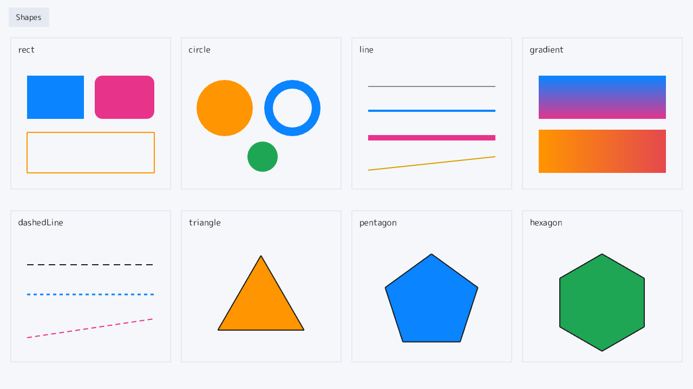
examples/shapes）。四角・円・線・グラデ・多角形。四角・円・線・グラデーション・破線・三角形・多角形（五角形／六角形）を、座標を渡すだけで描きます。多角形は頂点を円周上に並べて作り、drawPolygon にまとめて渡します。
使う道具: drawRect / drawRoundedRect / fillCircle / drawRing / drawGradientRect / dashedLine / drawTriangle / drawPolygon
examples/shapes/shapes_dll.cpp ── 全 113 行。mitiru new で作るプロジェクトの src/main.cpp をこれ 1 つに置き換えれば、そのまま mitiru run で動きます。GitHub ↗
// shapes — 図形描画のカタログ。基本の図形を 4 列 x 2 段のマスに並べて見せる // 実行すると: 紙白の画面に rect / circle / line / gradient / 破線 / 三角形 / 多角形 (五角形・六角形) が並ぶ // 関連 API: drawRect / fillCircle / line / drawGradientRect / dashedLine / drawTriangle / drawPolygon #include <cmath> // std::cos / std::sin (多角形の頂点を円周上に置くのに使う) #include <cstddef> // std::size_t #include <vector> // drawPolygon に渡す頂点の配列 #include <mitiru.hpp> #include "../common/chapter_hud.hpp" // 章の名前ラベルと共通パレット (theme::k... の色) using namespace mitiru; // 見本を 4 列 x 2 段のマスに並べる。マスの左上 = (kCol[列], kRow[段])。 constexpr float kCol[4] = {20.0f, 335.0f, 650.0f, 965.0f}; constexpr float kRow[2] = {70.0f, 390.0f}; constexpr float kCellW = 295.0f; // マスの幅 constexpr float kCellH = 280.0f; // マスの高さ struct Shapes02 { // 見本 1 マスぶんの枠と見出しを描く。見出しは大きめ (22px) + 濃い色ではっきり読ませる。 void cell(Screen& s, float x, float y, const char* name) const { s.drawRectFrame(Rect{x, y, kCellW, kCellH}, theme::kFrame, 1.0f); s.text(name, x + 14.0f, y + 10.0f, theme::kInk, 22.0f); } // 中心 (cx,cy)・半径 r・頂点数 n の正多角形の頂点を、真上を頂点にして順に作る。 // deg() は度をラジアンに直す。画面の y は下向きなので -90 度から始めると頂点が上を向く。 std::vector<Vec2> regularPolygon(float cx, float cy, float r, int n) const { std::vector<Vec2> pts; pts.reserve(static_cast<std::size_t>(n)); for (int k = 0; k < n; ++k) { const float a = deg(-90.0f + 360.0f / static_cast<float>(n) * static_cast<float>(k)); pts.push_back(Vec2{cx + r * std::cos(a), cy + r * std::sin(a)}); } return pts; } // 頂点をぐるりと線で結んで、多角形の枠 (ふち) を描く。 void outline(Screen& s, const std::vector<Vec2>& pts, const Color& c, float w) const { for (std::size_t i = 0; i < pts.size(); ++i) { s.drawLine(pts[i], pts[(i + 1) % pts.size()], c, w); } } void draw(Screen& s) const { s.fillScreen(theme::kPaper); chapterTitle(s, "Shapes"); // ── 上段: 四角・円・線・グラデーション ── float x = kCol[0], y = kRow[0]; cell(s, x, y, "rect"); s.drawRect(x + 30.0f, y + 70.0f, 105.0f, 80.0f, theme::kBlue); // 塗り s.drawRoundedRect(Rect{x + 155.0f, y + 70.0f, 110.0f, 80.0f}, theme::kPink, 14.0f); // 角丸 s.drawRectFrame(Rect{x + 30.0f, y + 175.0f, 235.0f, 75.0f}, theme::kOrange, 2.0f); // 枠線 x = kCol[1]; cell(s, x, y, "circle"); s.fillCircle(x + 80.0f, y + 130.0f, 52.0f, theme::kOrange); // 塗り s.drawRing(Vec2{x + 205.0f, y + 130.0f}, 52.0f, 36.0f, theme::kBlue); // リング s.fillCircle(x + 150.0f, y + 220.0f, 28.0f, theme::kGreen); x = kCol[2]; cell(s, x, y, "line"); s.line(x + 30.0f, y + 90.0f, x + 265.0f, y + 90.0f, theme::kInk, 1.0f); // 太さ 1 s.line(x + 30.0f, y + 135.0f, x + 265.0f, y + 135.0f, theme::kBlue, 4.0f); // 太さ 4 s.line(x + 30.0f, y + 185.0f, x + 265.0f, y + 185.0f, theme::kPink, 10.0f); // 太さ 10 s.line(x + 30.0f, y + 245.0f, x + 265.0f, y + 220.0f, theme::kAmber, 2.0f); // 斜め x = kCol[3]; cell(s, x, y, "gradient"); s.drawGradientRect(Rect{x + 30.0f, y + 70.0f, 235.0f, 80.0f}, theme::kBlue, theme::kPink); // 上→下 s.drawGradientRectH(Rect{x + 30.0f, y + 170.0f, 235.0f, 80.0f}, theme::kOrange, theme::kRed); // 左→右 // ── 下段: 破線・三角形・多角形 (五角形 / 六角形) ── x = kCol[0]; y = kRow[1]; cell(s, x, y, "dashedLine"); s.dashedLine(x + 30.0f, y + 100.0f, x + 265.0f, y + 100.0f, theme::kInk, 2.0f, 12.0f, 8.0f); s.dashedLine(x + 30.0f, y + 155.0f, x + 265.0f, y + 155.0f, theme::kBlue, 3.0f, 6.0f, 6.0f); s.dashedLine(x + 30.0f, y + 235.0f, x + 265.0f, y + 200.0f, theme::kPink, 2.0f, 9.0f, 6.0f); // 三角形は drawTriangle (頂点 3 つ) で塗る。仕上げにふちを線でなぞる。 x = kCol[1]; const auto tri = regularPolygon(x + 147.0f, y + 175.0f, 92.0f, 3); cell(s, x, y, "triangle"); s.drawTriangle(tri[0], tri[1], tri[2], theme::kOrange); outline(s, tri, theme::kInk, 2.0f); // 五角形・六角形は drawPolygon (頂点をまとめて渡す) で塗る。 x = kCol[2]; const auto penta = regularPolygon(x + 147.0f, y + 170.0f, 90.0f, 5); cell(s, x, y, "pentagon"); s.drawPolygon(penta, theme::kBlue); outline(s, penta, theme::kInk, 2.0f); x = kCol[3]; const auto hexa = regularPolygon(x + 147.0f, y + 170.0f, 90.0f, 6); cell(s, x, y, "hexagon"); s.drawPolygon(hexa, theme::kGreen); outline(s, hexa, theme::kInk, 2.0f); } }; // 実行: mitiru_host.exe shapes/shapes.dll MITIRU_GAME(Shapes02);
文字
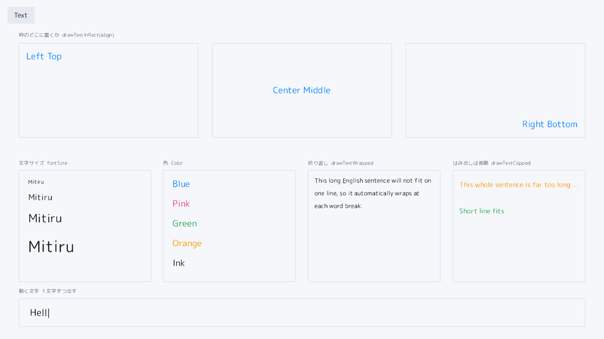
examples/text）。整列・折り返し・はみ出しの省略。枠のどこに文字を置くか（左上・中央・右下）の整列、文字サイズ・色、単語での折り返し、枠に収まらない行の末尾を「…」にするはみ出し省略を、区画ごとに見せます。文字が枠からあふれない書き方の見本です。
使う道具: drawTextInRect / drawTextWrapped / drawTextClipped / text
examples/text/text_dll.cpp ── 全 116 行。mitiru new で作るプロジェクトの src/main.cpp をこれ 1 つに置き換えれば、そのまま mitiru run で動きます。GitHub ↗
// text — 文字をあつかう主な機能を、余白をとった区画で 1 つずつ見せる // 実行すると: 上段に「枠のどこに文字を置くか」(整列) の大きな見本、 // 下段に 文字サイズ / 色 / 折り返し / はみ出しの省略 の見本が並ぶ // 使う機能: drawTextInRect (整列) / drawTextWrapped (折り返し) // / drawTextClipped (省略) / text (左上へ 1 行) #include <algorithm> // std::min #include <cmath> // std::fmod #include <string> // std::string (動く文字の substr) #include <mitiru.hpp> #include "../common/chapter_hud.hpp" // 章ラベルと共通パレット (theme::k... の色) using namespace mitiru; struct Text03 { float t = 0.0f; // 経過秒 (動く文字デモに使う) void update(Input, float dt) { t += dt; } // 区画 1 つぶんの小見出し (枠の上に薄グレー) と枠線を描く共通ヘルパー。 void cell(Screen& s, const Rect& box, const char* caption) const { s.text(caption, box.x(), box.y() - 24.0f, theme::kSubtle, 15.0f); s.drawRectFrame(box, theme::kFrame, 1.0f); } void draw(Screen& s) const { s.fillScreen(theme::kPaper); chapterTitle(s, "Text"); // ── 上段: 枠の「どこ」に文字を置くか (整列) ────────────────── // 大きな枠を 3 つ並べ、整列名をその整列どおりの位置に置く。 // 文字が枠のどこに付くのかが、名前と位置の両方で一目で分かる。 constexpr float boxY = 92.0f, boxW = 380.0f, boxH = 200.0f; constexpr float boxX[3] = {40.0f, 450.0f, 860.0f}; constexpr Screen::TextAlignH alignH[3] = { Screen::TextAlignH::Left, Screen::TextAlignH::Center, Screen::TextAlignH::Right}; constexpr Screen::TextAlignV alignV[3] = { Screen::TextAlignV::Top, Screen::TextAlignV::Middle, Screen::TextAlignV::Bottom}; constexpr const char* alignName[3] = {"Left Top", "Center Middle", "Right Bottom"}; s.text("枠のどこに置くか drawTextInRect(align)", 40.0f, 66.0f, theme::kSubtle, 15.0f); for (int i = 0; i < 3; ++i) { const Rect box{boxX[i], boxY, boxW, boxH}; s.drawRectFrame(box, theme::kFrame, 1.0f); s.drawTextInRect(box, alignName[i], theme::kBlue, 26.0f, alignH[i], alignV[i], 16.0f, 14.0f); } // ── 下段: 文字そのものの見せ方 4 つ ───────────────────────── constexpr float cy = 362.0f, ch = 236.0f, cw = 280.0f; constexpr float fx[4] = {40.0f, 346.0f, 653.0f, 960.0f}; // (1) 文字サイズ: 同じ語を小さい→大きいへ。fontSize の数値を変えるだけ。 cell(s, Rect{fx[0], cy, cw, ch}, "文字サイズ fontSize"); constexpr float sizes[4] = {16.0f, 24.0f, 34.0f, 46.0f}; float ty = cy + 14.0f; for (float sz : sizes) { s.drawTextInRect(Rect{fx[0] + 16.0f, ty, cw - 24.0f, sz * 1.4f}, "Mitiru", theme::kInk, sz, Screen::TextAlignH::Left, Screen::TextAlignV::Top); ty += sz * 1.4f + 6.0f; // 次の行は今の文字の高さぶんだけ下げる } // (2) 色: 書き方は同じで、色 (第 3 引数) だけを変える。 cell(s, Rect{fx[1], cy, cw, ch}, "色 Color"); struct Sw { Color c; const char* name; }; const Sw sw[5] = {{theme::kBlue, "Blue"}, {theme::kPink, "Pink"}, {theme::kGreen, "Green"}, {theme::kOrange, "Orange"}, {theme::kInk, "Ink"}}; float coy = cy + 12.0f; for (const auto& e : sw) { s.drawTextInRect(Rect{fx[1] + 16.0f, coy, cw - 24.0f, 34.0f}, e.name, e.c, 26.0f, Screen::TextAlignH::Left, Screen::TextAlignV::Middle); coy += 42.0f; } // (3) 折り返し: 長い文が枠の幅で単語ごとに折り返る (スペース区切り)。 const Rect wrapBox{fx[2], cy, cw, ch}; cell(s, wrapBox, "折り返し drawTextWrapped"); s.drawTextWrapped(wrapBox, "This long English sentence will not fit on one line, " "so it automatically wraps at each word break.", theme::kInk, 18.0f, 14.0f, 12.0f); // (4) はみ出しの省略: 枠に収まらない行は末尾が自動で "..." になる。 // ただの drawText と違い、枠の外へあふれて他と重ならない。 const Rect clipBox{fx[3], cy, cw, ch}; cell(s, clipBox, "はみ出しは省略 drawTextClipped"); s.drawTextClipped(Rect{fx[3] + 14.0f, cy + 20.0f, cw - 28.0f, 30.0f}, "This whole sentence is far too long to fit inside the box", theme::kOrange, 20.0f); s.drawTextClipped(Rect{fx[3] + 14.0f, cy + 76.0f, cw - 28.0f, 30.0f}, "Short line fits", theme::kGreen, 20.0f); // ── 動く文字: 1 文字ずつ出す。text.substr(0, n) の n を時間で増やすだけ ── s.text("動く文字 1 文字ずつ出す", 40.0f, 610.0f, theme::kSubtle, 15.0f); const Rect animBox{40.0f, 634.0f, 1200.0f, 60.0f}; s.drawRectFrame(animBox, theme::kFrame, 1.0f); static const std::string msg = "Hello! I appear one letter at a time."; const int len = static_cast<int>(msg.size()); const float cycle = static_cast<float>(len) / 18.0f + 1.4f; // 打ち終えて少し待ち、最初へ戻る const float phase = std::fmod(t, cycle); const int n = std::min(len, static_cast<int>(phase * 18.0f)); // 1 秒に 18 文字 std::string shown = msg.substr(0, static_cast<std::size_t>(n)); if (std::fmod(t, 1.0f) < 0.5f) { shown += "|"; } // 点滅カーソル s.drawTextInRect(Rect{60.0f, animBox.y(), 1160.0f, animBox.height()}, shown.c_str(), theme::kInk, 28.0f, Screen::TextAlignH::Left, Screen::TextAlignV::Middle); } }; // 実行: mitiru_host.exe text/text.dll MITIRU_GAME(Text03);
入力
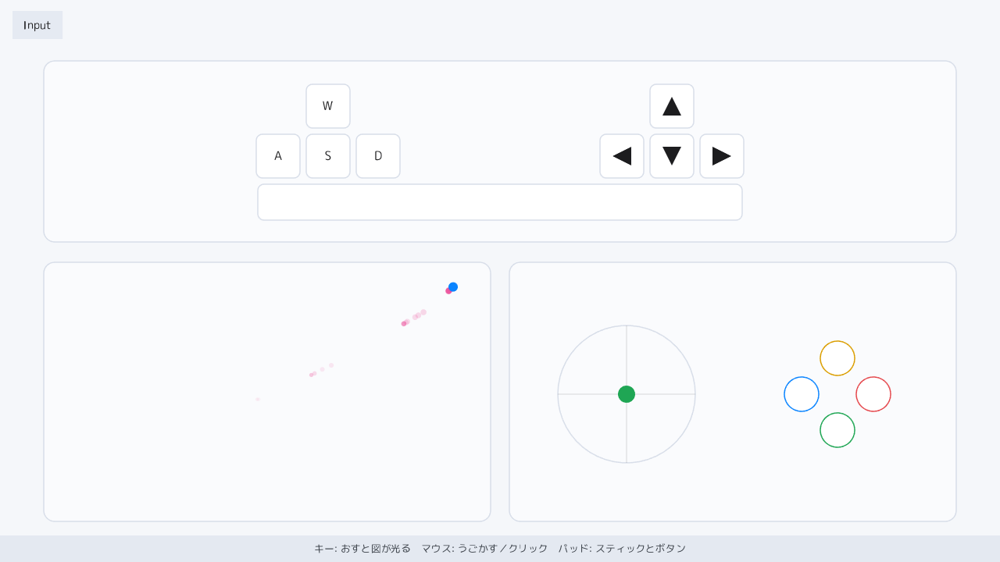
examples/input）。キーボード・マウス・パッドの「今」。画面を 3 つに分け、キーボード・マウス・パッドの「今」を光らせます。押されたキーだけ青く光り、マウスは動いた跡を点で引き、パッドはスティックの傾きとボタンの押下を示します。押す・動かすと視覚で分かります。
使う道具: in.down / in.mouseDown / in.padDown / in.leftStick / drawRoundedRect
examples/input/input_dll.cpp ── 全 157 行。mitiru new で作るプロジェクトの src/main.cpp をこれ 1 つに置き換えれば、そのまま mitiru run で動きます。GitHub ↗
// input — 入力の「今」を見せる章。キーボード / マウス / パッドの状態を、画面を 3 つに分けて光らせる。 // // ゲームを動かす土台 (host) が毎フレーム、キー・マウス・パッドの状態を 1 つにまとめて渡してくれる。 // ゲーム側は、その渡された入力 (Input) を見るだけでよい。 #include <cstdint> #include <mitiru.hpp> #include "../common/chapter_hud.hpp" // 章ラベル (左上) と操作帯 (下端) の共通部品 using namespace mitiru; // 配色 constexpr Color kFaint = Color{0.11f, 0.11f, 0.12f, 0.16f}; // 目盛り線のごく薄い色 constexpr Color kKeyOff = hex(0xFFFFFF); // 押していないキーの面 (白) constexpr Color kPanel = Color{1.0f, 1.0f, 1.0f, 0.55f}; // 区画の下地 (淡い白カード) // 3 つの区画の位置と大きさ (x, y, 幅, 高さ) constexpr Rect kKbBox{56.0f, 78.0f, 1168.0f, 232.0f}; // 上: キーボード (画面幅いっぱい) constexpr Rect kMsBox{56.0f, 336.0f, 572.0f, 332.0f}; // 左下: マウス constexpr Rect kPdBox{652.0f, 336.0f, 572.0f, 332.0f}; // 右下: パッド constexpr Vec2 kStick{802.0f, 505.0f}; constexpr float kStickR = 88.0f; // スティックを描く丸領域 // キーボード図の 1 キー。dir が 1..4 なら矢印 (上/下/左/右) を描き、cap は WASD の文字 (矢印キーは空文字)。 struct KeyCell { Key k; float x, y, w, h; int dir; const char* cap; }; constexpr KeyCell kKeys[] = { // WASD は左側、矢印キーは右側に逆 T 字型、Space は下段中央 {Key::W, 392, 108, 56, 56, 0, "W"}, {Key::A, 328, 172, 56, 56, 0, "A"}, {Key::S, 392, 172, 56, 56, 0, "S"}, {Key::D, 456, 172, 56, 56, 0, "D"}, {Key::Up, 832, 108, 56, 56, 1, ""}, {Key::Left, 768, 172, 56, 56, 3, ""}, {Key::Down, 832, 172, 56, 56, 2, ""}, {Key::Right, 896, 172, 56, 56, 4, ""}, {Key::Space, 330, 236, 620, 46, 0, ""}}; // パッドの 4 つのボタン。Xbox 配置 (A=緑で下 / B=赤で右 / X=青で左 / Y=黄で上) をひし形に並べる。 struct PadCell { Pad b; float cx, cy; Color col; const char* cap; }; constexpr PadCell kPad[] = { {Pad::Y, 1072, 459, theme::kAmber, "Y"}, {Pad::X, 1026, 505, theme::kBlue, "X"}, {Pad::B, 1118, 505, theme::kRed, "B"}, {Pad::A, 1072, 551, theme::kGreen, "A"}}; // ゲームの状態は、この構造体 1 つにまとめる。ポインタを持たない単純な構造体なので、 // host がそのままコピーして記録したり、あとで巻き戻したりできる。 struct Input04 { float mx = 0.0f, my = 0.0f; std::uint8_t mbtn = 0; // マウス位置 / 押下ボタン (bit0=左 1=右 2=中) Vec2 trail[40] = {}; int head = 0, tn = 0; // マウスの通った跡を貯める輪っか状のバッファ std::uint32_t keyBits = 0, padBits = 0; // 押下中のキー / パッドボタン (1 ビット = 1 個) bool pad = false; float lsx = 0.0f, lsy = 0.0f; // パッド接続の有無 / 左スティックの傾き(+y=上) // update だけが状態を書き換える (draw は状態を読んで描くだけ)。 // この章は時間経過を使わないので、前フレームからの秒数 dt は受け取るが使わない。 void update(Input in, float /*dt*/) { mx = in.mouseX(); my = in.mouseY(); trail[head] = Vec2{mx, my}; head = (head + 1) % 40; if (tn < 40) { ++tn; } // マウスボタンの押下を 1 つの数にまとめる (左=1, 右=2, 中=4)。 mbtn = 0; if (in.mouseDown(0)) { mbtn |= 1; } // 左 if (in.mouseDown(1)) { mbtn |= 2; } // 右 if (in.mouseDown(2)) { mbtn |= 4; } // 中 // in.down(key) はそのキーが押されている間だけ true (離すとすぐ false に戻る)。 // 押されているキーを keyBits に 1 ビットずつ記録する (i 番目のキー = i ビット目)。 keyBits = 0; int i = 0; for (const KeyCell& c : kKeys) { if (in.down(c.k)) { keyBits |= (1u << i); } ++i; } pad = in.padConnected(); lsx = in.leftStick().x; lsy = in.leftStick().y; padBits = 0; int p = 0; for (const PadCell& c : kPad) { if (in.padDown(c.b)) { padBits |= (1u << p); } ++p; } } // 画面座標 (1280x720) を、マウス区画の内側 (枠から 22px) に縮めて対応づける。 static Vec2 toBox(float x, float y) { const float u = x < 0.0f ? 0.0f : (x > 1280.0f ? 1280.0f : x); const float v = y < 0.0f ? 0.0f : (y > 720.0f ? 720.0f : y); return Vec2{kMsBox.x() + 22.0f + u / 1280.0f * (kMsBox.width() - 44.0f), kMsBox.y() + 22.0f + v / 720.0f * (kMsBox.height() - 44.0f)}; } // 矢印キーの中に、その向きの三角形を描く。 void arrow(Screen& s, const Rect& r, int dir, Color c) const { const float x = r.x() + r.width() * 0.5f, y = r.y() + r.height() * 0.5f, e = 12.0f; if (dir == 1) { s.drawTriangle({x, y - e}, {x - e, y + e}, {x + e, y + e}, c); } // 上 else if (dir == 2) { s.drawTriangle({x, y + e}, {x - e, y - e}, {x + e, y - e}, c); } // 下 else if (dir == 3) { s.drawTriangle({x - e, y}, {x + e, y - e}, {x + e, y + e}, c); } // 左 else { s.drawTriangle({x + e, y}, {x - e, y - e}, {x - e, y + e}, c); } // 右 } void draw(Screen& s) const { s.fillScreen(theme::kPaper); chapterTitle(s, "Input"); // 3 つの区画の下地カードと枠を描く。 for (const Rect& b : {kKbBox, kMsBox, kPdBox}) { s.drawRoundedRect(b, kPanel, 14.0f); s.drawRoundedRectFrame(b, theme::kFrame, 14.0f, 1.5f); } // キーボード図: 押されているキーだけ青く光る (離すと消える)。 int i = 0; for (const KeyCell& c : kKeys) { const Rect r{c.x, c.y, c.w, c.h}; const bool lit = (keyBits >> i++) & 1u; s.drawRoundedRect(r, lit ? theme::kBlue : kKeyOff, 8.0f); s.drawRoundedRectFrame(r, lit ? theme::kBlue : theme::kFrame, 8.0f, 1.5f); const Color gc = lit ? kKeyOff : theme::kInk; if (c.dir) { arrow(s, r, c.dir, gc); } else if (c.cap[0]) { s.drawTextInRect(r, c.cap, gc, 22.0f, Screen::TextAlignH::Center, Screen::TextAlignV::Middle); } } // マウス区画: 動いた跡を薄い点で引き、いまの位置に丸を置く (どちらも区画内に収める)。 const Vec2 m = toBox(mx, my); for (int j = 0; j < tn; ++j) { const int idx = (head - 1 - j + 80) % 40; // 新しい点から順にたどる (+80 は負にしないため) const float fade = 1.0f - float(j) / float(tn); // 古い点ほど薄く小さく const Vec2 t = toBox(trail[idx].x, trail[idx].y); Color tc = theme::kPink; tc.a = 0.30f * fade; s.fillCircle(t.x, t.y, 2.0f + 3.0f * fade, tc); } // 押されているボタンで丸の色が変わり、少し大きくなる。 Color mk = theme::kBlue; // 何も押していないとき if (mbtn & 1) { mk = theme::kOrange; } // 左 else if (mbtn & 2) { mk = theme::kPink; } // 右 else if (mbtn & 4) { mk = theme::kGreen; } // 中 s.fillCircle(m.x, m.y, mbtn ? 10.0f : 6.0f, mk); // パッド区画: 左スティックの傾きを、丸い領域の中の点で示す。 s.drawCircleFrame(kStick, kStickR, theme::kFrame, 1.5f); s.line(kStick.x - kStickR, kStick.y, kStick.x + kStickR, kStick.y, kFaint, 1.0f); // 横の目盛り s.line(kStick.x, kStick.y - kStickR, kStick.x, kStick.y + kStickR, kFaint, 1.0f); // 縦の目盛り s.fillCircle(kStick.x + lsx * kStickR * 0.82f, kStick.y - lsy * kStickR * 0.82f, 11.0f, pad ? theme::kGreen : theme::kFrame); // 顔ボタン (A/B/X/Y): 押されているボタンだけ塗りつぶす。 int p = 0; for (const PadCell& c : kPad) { const bool lit = (padBits >> p++) & 1u; const Color col = pad ? c.col : theme::kFrame; s.fillCircle(c.cx, c.cy, 22.0f, lit ? col : kKeyOff); s.drawCircleFrame({c.cx, c.cy}, 22.0f, col, 1.5f); s.drawTextInRect(Rect{c.cx - 22.0f, c.cy - 22.0f, 44.0f, 44.0f}, c.cap, lit ? kKeyOff : (pad ? col : theme::kSubtle), 18.0f, Screen::TextAlignH::Center, Screen::TextAlignV::Middle); } // パッドが繋がっていないときは、薄い色で一言そえる。 if (!pad) s.drawTextInRect(Rect{kPdBox.x(), kStick.y + kStickR + 16.0f, kPdBox.width(), 22.0f}, "パッド みつからない", theme::kSubtle, 15.0f, Screen::TextAlignH::Center, Screen::TextAlignV::Middle); chapterControls(s, "キー: おすと図が光る マウス: うごかす／クリック パッド: スティックとボタン"); } }; // この構造体を DLL の入口に結びつける (これ 1 行でゲームとして読み込めるようになる)。 MITIRU_GAME(Input04);
動き
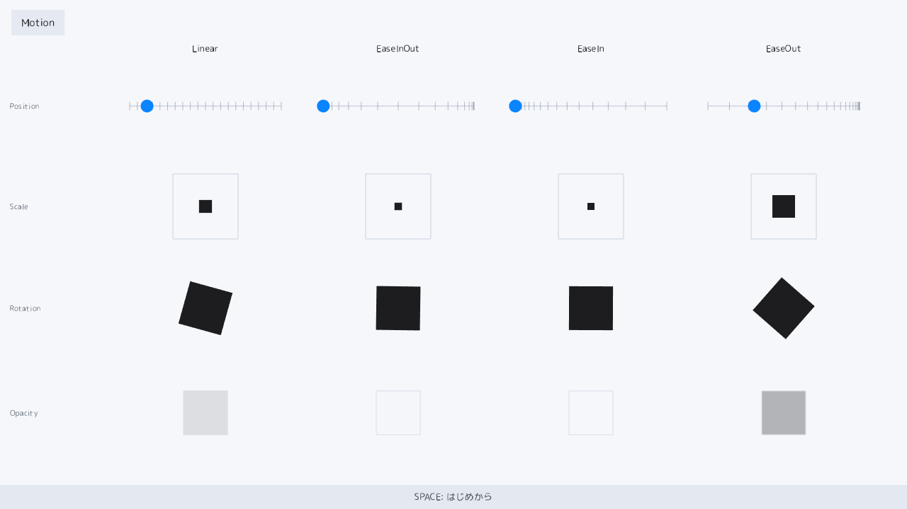
examples/motion）。イージングの緩急を格子で。4 種のイージング（緩急の付け方）を列に、位置・大きさ・回転・透明度を行にした格子です。ひとつの曲線が各プロパティをどう動かすかを一望できます。位置の目盛りが、詰まる所ほど遅い、という速さの変化を形で見せます。前フレームからの経過秒（dt）で時間を進めます。
使う道具: vn::Easing::* / pushRotation / popTransform / withAlpha / in.pressed
examples/motion/motion_dll.cpp ── 全 122 行。mitiru new で作るプロジェクトの src/main.cpp をこれ 1 つに置き換えれば、そのまま mitiru run で動きます。GitHub ↗
// motion — 動きに緩急をつける「イージング」の見本。1 つの曲線が位置・大きさ・回転・透明度をどう動かすか // 実行すると: 4 種のイージング (列) が、位置 / 大きさ / 回転 / 透明度 (行) を同時に動かし続ける // 関連 API: mitiru::vn::Easing (linear / easeInCubic / easeOutCubic / easeInOutCubic) #include <algorithm> // std::min #include <cmath> // std::fmod #include <mitiru.hpp> #include <mitiru/vn/EasingFunctions.hpp> // イージング関数 (linear / easeInCubic / easeOutCubic ...) #include "../common/chapter_hud.hpp" // 章ラベル + 操作帯 + 共通の配色 using namespace mitiru; // イージング関数 1 つと、その表示名。列ごとに 1 種類を受け持つ。 // イージングは 0→1 の進み具合を受け取り、緩急をつけた 0→1 を返す関数。 using EaseFn = float (*)(float) noexcept; struct Column { const char* name; EaseFn ease; }; constexpr Column kCols[4] = { {"Linear", &vn::Easing::linear}, // 等速 (緩急なし) {"EaseInOut", &vn::Easing::easeInOutCubic}, // ゆっくり始まり、速くなり、またゆっくり止まる {"EaseIn", &vn::Easing::easeInCubic}, // ゆっくり始まって、だんだん速く {"EaseOut", &vn::Easing::easeOutCubic}, // 速く始まって、だんだん遅く }; // 4 つの行 = 動かすプロパティ。中心 y と、左端に出す名前。 constexpr float kRowY[4] = {150.0f, 292.0f, 436.0f, 584.0f}; constexpr const char* kRowLbl[4] = {"Position", "Scale", "Rotation", "Opacity"}; // 各列の配置。左の 165px は行ラベル用にあけ、そこから幅 250 の列を 272 間隔で 4 本並べる。 constexpr float kColX = 165.0f, kColW = 250.0f, kColGap = 272.0f; constexpr float kDur = 1.6f; // 0 → 1 まで動く秒数 constexpr float kHold = 0.5f; // 動き切ったあと、次の周回まで止めて見せる秒数 struct Motion { float t = 0.0f; // 経過秒。状態はこれ 1 つだけ void update(Input in, float dt) { if (in.pressed(Key::Space)) { t = 0.0f; } // 最初からやり直す t += dt; } // いまの進み具合 (0 → 1)。動き切ったら、次の周回が始まるまで 1 のまま止める。 float progress() const { const float phase = std::fmod(t, kDur + kHold); return std::min(phase / kDur, 1.0f); } void draw(Screen& s) const { s.fillScreen(theme::kPaper); chapterTitle(s, "Motion"); const float p = progress(); for (int r = 0; r < 4; ++r) // 行ラベルは左端に 1 回ずつ { s.text(kRowLbl[r], 14.0f, kRowY[r] - 8.0f, theme::kSubtle, 15); } for (int c = 0; c < 4; ++c) { const float left = kColX + kColGap * static_cast<float>(c); const float center = left + kColW * 0.5f; const float e = kCols[c].ease(p); // この列のイージングを通した進み具合 s.drawTextInRect(Rect{left, 56.0f, kColW, 26.0f}, kCols[c].name, theme::kInk, 18.0f, Screen::TextAlignH::Center, Screen::TextAlignV::Middle); drawPosition(s, left, kRowY[0], e, c); drawScale(s, center, kRowY[1], e); drawRotation(s, center, kRowY[2], e); drawOpacity(s, center, kRowY[3], e); } chapterControls(s, "SPACE: はじめから"); } // 位置: 横のレールの上を丸が進む。等間隔の時間で刻んだ目盛りも重ねる — // 目盛りが詰まっている所ほど動きが遅く、まばらな所ほど速い (速さの変化が形で見える)。 void drawPosition(Screen& s, float left, float y, float e, int c) const { const float x0 = left + 18.0f, len = kColW - 36.0f; s.drawLine(Vec2{x0, y}, Vec2{x0 + len, y}, theme::kFrame, 2.0f); for (int k = 0; k <= 20; ++k) // 等間隔の時間ごとに、丸が来る位置へ目盛りを打つ { const float tx = x0 + len * kCols[c].ease(static_cast<float>(k) / 20.0f); s.drawLine(Vec2{tx, y - 6.0f}, Vec2{tx, y + 6.0f}, theme::kSubtle.withAlpha(0.45f), 1.0f); } s.fillCircle(x0 + len * e, y, 9.0f, theme::kBlue); } // 大きさ: 枠の中で、四角形が小さく → 大きく育つ。 void drawScale(Screen& s, float cx, float cy, float e) const { s.drawRectFrame(Rect{cx - 46.0f, cy - 46.0f, 92.0f, 92.0f}, theme::kFrame, 1.5f); const float side = 10.0f + e * 72.0f; s.drawRect(cx - side * 0.5f, cy - side * 0.5f, side, side, theme::kInk); } // 回転: 四角形が 0 → 135 度まわる (斜めに傾いて見えるので回転が分かりやすい)。 void drawRotation(Screen& s, float cx, float cy, float e) const { s.pushRotation(deg(e * 135.0f), cx, cy); s.drawRect(cx - 31.0f, cy - 31.0f, 62.0f, 62.0f, theme::kInk); s.popTransform(); } // 透明度: 四角形が透明 → 不透明へ浮かび上がる (薄い枠で位置が分かるようにしておく)。 void drawOpacity(Screen& s, float cx, float cy, float e) const { const Rect box{cx - 31.0f, cy - 31.0f, 62.0f, 62.0f}; s.drawRectFrame(box, theme::kFrame, 1.0f); s.drawRect(box, theme::kInk.withAlpha(e)); } }; MITIRU_GAME(Motion);
スプライト
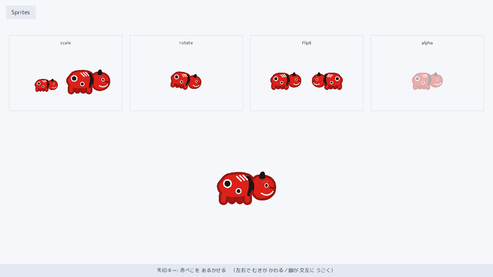
examples/sprites）。画像の拡大・回転・反転・半透明・歩行。赤べこ（会津の張り子牛）のスプライトを、大きさ・回転・左右反転・半透明の見本で並べ、下段では矢印キーで歩かせます。歩くと進む向きに反転し、4 コマの脚が交互に動きます。画像はファイルから読み込んで描きます。
使う道具: drawSprite / pushRotation / popTransform / in.move / Timer::every / withAlpha
examples/sprites/sprites_dll.cpp ── 全 117 行。mitiru new で作るプロジェクトの src/main.cpp をこれ 1 つに置き換えれば、そのまま mitiru run で動きます。GitHub ↗
// sprites — 画像 (スプライト) を描く章。赤べこ (会津の張り子牛) を、拡大・回転・反転・半透明で見せ、歩かせる。 // 実行すると: 上段にスプライトの機能見本 (大きさ / 回転 / 左右反転 / 半透明)、下段で矢印キーで歩く赤べこ。 // 使う機能: Texture::fromFile (画像読み込み) / drawSprite (flipX・色/透明度) / pushRotation (回転) / in.move() / Timer #include <mitiru.hpp> #include <mitiru/render/Texture.hpp> // 画像を直接渡して描く drawSprite のため #include "../common/chapter_hud.hpp" // 章の名前ラベル (左上) と操作帯 (下端) の共通ヘルパー using namespace mitiru; // 赤べこの絵は 4 コマ (歩行サイクル)。順に切り替えると、短い脚が前後に動いて歩いて見える。 // 画像 (Texture) は内部に可変長データを持つので、ゲームの状態 struct には入れられない。 // (状態 struct はポインタを持たない単純なデータの塊に保つ決まりのため。) そこで画像は、 // このファイル直下の変数へ開始時に一度だけ読み込む。読み込みに失敗しても value_or で // 「空の画像」を入れるので、何も描かないだけで落ちない。 static const render::Texture kFrames[4] = { render::Texture::fromFile("sprites/assets/sprites/akabeko_0.png").value_or(render::Texture{}), render::Texture::fromFile("sprites/assets/sprites/akabeko_1.png").value_or(render::Texture{}), render::Texture::fromFile("sprites/assets/sprites/akabeko_2.png").value_or(render::Texture{}), render::Texture::fromFile("sprites/assets/sprites/akabeko_3.png").value_or(render::Texture{}), }; constexpr float kSpeed = 260.0f; // 歩く速さ (1 秒あたりのピクセル) constexpr float kWalk = 0.575f; // 歩く赤べこの大きさ (画像の何倍か。絵が高解像度なので 1 未満で縮小して使う) constexpr float kStepSec = 0.13f; // 歩行コマを 1 つ進める間隔 (秒) // 上段の機能見本を並べる 4 つのマス (左端 x)。幅 293・高さ 196。 constexpr float kCellY = 92.0f, kCellW = 293.0f, kCellH = 196.0f; constexpr float kCellX[4] = {24.0f, 337.0f, 650.0f, 963.0f}; constexpr const char* kCellLbl[4] = {"scale", "rotate", "flipX", "alpha"}; struct Sprites06 { float cx = 640.0f, cy = 480.0f; // 歩く赤べこの中心 bool faceLeft = false; // 進む向き (左を向いているか) Timer walk; // 歩行アニメ用のタイマー (単純な値なので状態に置ける) int step = 0; // 今の歩行コマ (0〜3) float t = 0.0f; // 経過秒 (回転の見本に使う) static float clampf(float v, float lo, float hi) { return v < lo ? lo : (v > hi ? hi : v); } float texW() const { return static_cast<float>(kFrames[0].width()); } float texH() const { return static_cast<float>(kFrames[0].height()); } // update だけが状態を書き換える (draw は状態を読んで描くだけ)。 void update(Input in, float dt) { t += dt; const Stick m = in.move(); // 矢印キー・WASD・パッドを 1 つのベクトルにまとめてくれる cx += m.x * kSpeed * dt; cy += m.y * kSpeed * dt; if (m.x < -0.1f) { faceLeft = true; } // 左へ動いたら左向き else if (m.x > 0.1f) { faceLeft = false; } // 右へ動いたら右向き // 下段の歩ける範囲に収める (上段の見本と重ならないよう y は下側に限る)。 const float halfW = texW() * kWalk * 0.5f, halfH = texH() * kWalk * 0.5f; cx = clampf(cx, halfW, 1280.0f - halfW); cy = clampf(cy, 380.0f, 720.0f - 34.0f - halfH); // 動いている間だけ歩行コマを順送り。止まっているときは休みの姿 (コマ 0) に戻す。 const bool moving = (m.x * m.x + m.y * m.y) > 0.01f; if (moving) { if (walk.every(kStepSec, dt)) { step = (step + 1) % 4; } } else { step = 0; } } // 赤べこ 1 匹を中心 (x,y)・大きさ scale で描く。flip で左右反転、tint で色/透明度、rotDeg で回転。 void beko(Screen& s, int frame, float x, float y, float scale, bool flip = false, Color tint = color::White, float rotDeg = 0.0f) const { const render::Texture& tex = kFrames[frame]; const float w = static_cast<float>(tex.width()) * scale; const float h = static_cast<float>(tex.height()) * scale; const Rect dst{x - w * 0.5f, y - h * 0.5f, w, h}; const Rect src{0.0f, 0.0f, static_cast<float>(tex.width()), static_cast<float>(tex.height())}; if (rotDeg != 0.0f) { s.pushRotation(deg(rotDeg), x, y); } // これから描く絵を x,y 中心に回す s.drawSprite(tex, dst, src, tint, flip); if (rotDeg != 0.0f) { s.popTransform(); } // 回転を元に戻す } // 機能見本のマス 1 つ (枠 + 上にラベル)。中の絵は draw() 側で描く。 void cell(Screen& s, int i) const { s.drawRectFrame(Rect{kCellX[i], kCellY, kCellW, kCellH}, theme::kFrame, 1.0f); s.drawTextInRect(Rect{kCellX[i], kCellY + 8.0f, kCellW, 22.0f}, kCellLbl[i], theme::kInk, 16.0f, Screen::TextAlignH::Center, Screen::TextAlignV::Middle); } void draw(Screen& s) const { s.fillScreen(theme::kPaper); chapterTitle(s, "Sprites"); for (int i = 0; i < 4; ++i) { cell(s, i); } const float midY = kCellY + kCellH * 0.5f + 16.0f; // マス内で絵を置く高さ // scale: 同じ絵を 小 と 大 で並べる (drawSprite の拡大率のちがい)。 beko(s, 0, kCellX[0] + 96.0f, midY + 12.0f, 0.225f); beko(s, 0, kCellX[0] + 205.0f, midY, 0.425f); // rotate: 1 匹をゆっくり回す。 beko(s, 0, kCellX[1] + kCellW * 0.5f, midY, 0.3f, false, color::White, t * 70.0f); // flipX: 右向きと左向きを向かい合わせに。 beko(s, 0, kCellX[2] + 92.0f, midY, 0.3f, false); // 右向き beko(s, 0, kCellX[2] + 200.0f, midY, 0.3f, true); // 左向き (flipX) // alpha: 色の透明度を下げて半透明に。 beko(s, 0, kCellX[3] + kCellW * 0.5f, midY, 0.3f, false, color::White.withAlpha(0.35f)); // ── 主役: 矢印キーで動く赤べこ。進む向きに反転し、短い脚が交互に動いて歩く。── beko(s, step, cx, cy, kWalk, faceLeft); chapterControls(s, "矢印キー: 赤べこを あるかせる （左右で むきが かわる／脚が 交互に うごく）"); } }; // 実行: mitiru_host.exe sprites/sprites.dll MITIRU_GAME(Sprites06);
カメラ
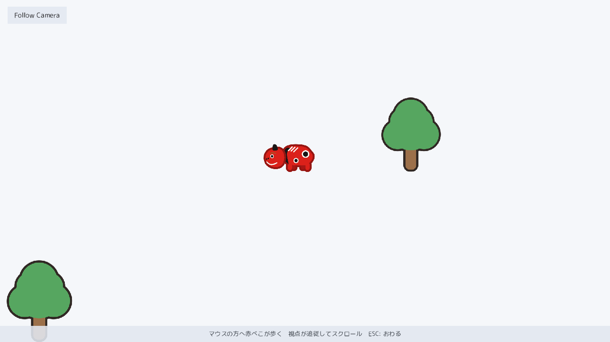
examples/camera）。広い牧場を先読みしながら追う。画面よりずっと広い牧場を、赤べこがマウスの方へ歩きます。視点が、動かない範囲（deadzone）・進む向きの先読み・なめらかな追従・牧場の外を映さない制限、をまとめて効かせて追いかけます。木と赤べこは接地する位置の順に描かれ、前後が入れ替わります。
使う道具: camera::FollowCam / cam.update / applyCamera / endCamera / drawSprite
examples/camera/camera_dll.cpp ── 全 133 行。mitiru new で作るプロジェクトの src/main.cpp をこれ 1 つに置き換えれば、そのまま mitiru run で動きます。GitHub ↗
// camera — 追従カメラ。赤べこがマウスの方へ牧場を歩き、視点が滑らかに追従してスクロールする。 // 実行すると: マウスカーソルの方へ赤べこが歩く。画面より広い牧場を、視点が deadzone + 先読みで追う。 // 関連 API: mitiru::camera::FollowCam (setTarget / update) / Screen::applyCamera / endCamera / drawSprite #include <algorithm> // std::clamp / std::min #include <cmath> // std::sqrt / std::sin / std::fabs #include <mitiru.hpp> #include <mitiru/camera/FollowCam.hpp> // 追従カメラ (deadzone + 先読み + ease + world clamp) #include <mitiru/render/Texture.hpp> // 画像を渡して描く drawSprite のため #include "../common/chapter_hud.hpp" // 章ラベル + 操作帯 (全章共通の書式) using namespace mitiru; constexpr float kScreenW = 1280.0f, kScreenH = 720.0f; constexpr float kWorldW = 4000.0f, kWorldH = 2600.0f; // 画面よりずっと広い牧場 // 画像はすべて赤べこと同じ生成方式 (tools/ の Python で SVG 風に作った PNG)。 static const render::Texture kBody = render::Texture::fromFile( "camera/assets/sprites/akabeko_body.png").value_or(render::Texture{}); static const render::Texture kHead = render::Texture::fromFile( "camera/assets/sprites/akabeko_head_neutral.png").value_or(render::Texture{}); static const render::Texture kTree = render::Texture::fromFile( "camera/assets/sprites/tree.png").value_or(render::Texture{}); constexpr float kBekoScale = 0.4f; constexpr float kPivotOffX = 32.0f, kPivotOffY = 8.0f; // 首の支点 (observe と同じ) // 牧場に立つ木。根元のワールド座標 (x, y) と大きさ scale。前後関係のため y の昇順で並べる。 struct Tree { float x, y, scale; }; constexpr Tree kTrees[] = { { 700.0f, 260.0f, 0.60f }, { 2300.0f, 320.0f, 0.72f }, { 3400.0f, 440.0f, 0.55f }, {1300.0f, 560.0f, 0.66f }, { 500.0f, 680.0f, 0.70f }, { 2800.0f, 740.0f, 0.58f }, {3700.0f, 860.0f, 0.64f }, { 1800.0f, 960.0f, 0.75f }, { 980.0f, 1080.0f, 0.56f }, {3100.0f, 1180.0f, 0.68f }, { 2200.0f, 1320.0f, 0.60f }, { 620.0f, 1440.0f, 0.72f }, {3600.0f, 1560.0f, 0.58f }, { 1420.0f, 1680.0f, 0.66f }, { 2700.0f, 1820.0f, 0.70f }, {3300.0f, 2020.0f, 0.62f }, { 820.0f, 2160.0f, 0.68f }, { 1980.0f, 2320.0f, 0.74f }, }; struct CameraDemo { float px = kWorldW * 0.5f, py = kWorldH * 0.5f; // 赤べこのワールド座標 float facing = 1.0f; // -1 = 左、+1 = 右 float bob = 0.0f; // 歩行の位相 (揺れ / 首振り) bool moving = false; camera::FollowCam cam; bool inited = false; void update(Input in, Hud hud, float dt) { if (!inited) // カメラの効き方を一度だけ設定する { cam.cfg.deadzoneHalfW = 120.0f; cam.cfg.deadzoneHalfH = 80.0f; // この範囲は動かない cam.cfg.lookaheadX = 120.0f; cam.cfg.ease = 6.0f; // 進む向きを先読み / 追従の滑らかさ cam.cfg.clamp = true; // 牧場の外を映さない cam.cfg.worldBounds = Rect{0.0f, 0.0f, kWorldW, kWorldH}; cam.cfg.viewW = kScreenW; cam.cfg.viewH = kScreenH; cam.setTarget(px, py); cam.snapToTarget(); inited = true; } if (in.pressed(Key::Escape)) { hud.quit(); } // マウスカーソルのワールド座標 = 画面座標 + (カメラ中心 - 画面中心)。そこへ向かって歩く。 const float wtx = in.mouseX() + cam.pos.x - kScreenW * 0.5f; const float wty = in.mouseY() + cam.pos.y - kScreenH * 0.5f; const float dx = wtx - px, dy = wty - py; const float dist = std::sqrt(dx * dx + dy * dy); moving = false; if (dist > 26.0f) // カーソルが近ければ止まる { const float sp = std::min(dist * 3.5f, 380.0f); // 遠いほど速く (上限あり) px = std::clamp(px + dx / dist * sp * dt, 40.0f, kWorldW - 40.0f); py = std::clamp(py + dy / dist * sp * dt, 40.0f, kWorldH - 40.0f); if (dx > 8.0f) { facing = 1.0f; } else if (dx < -8.0f) { facing = -1.0f; } bob += dt * 9.0f; moving = true; } cam.setTarget(px, py); // 追う先を毎フレーム伝える cam.setFacing(facing); cam.update(dt); // deadzone / 先読み / ease / clamp をまとめて適用 } void draw(Screen& s) const { s.fillScreen(theme::kPaper); s.applyCamera(cam.pos.x, cam.pos.y); // 以降ワールド座標で描く → カメラ中心がスクロールする // 木と赤べこを接地 y の順に描く (奥＝上にある方を先に)。赤べこの足元 y が // 手前になる木より上なら、その木より先に描く = 赤べこが木の後ろに回り込む。 const float bekoFootY = py + kBody.height() * kBekoScale * 0.35f; bool bekoDrawn = false; for (const Tree& t : kTrees) { if (!bekoDrawn && bekoFootY < t.y) { drawBeko(s); bekoDrawn = true; } drawTree(s, t); } if (!bekoDrawn) { drawBeko(s); } s.endCamera(); // HUD は最後に画面座標で描く = 常に最前面 chapterTitle(s, "Follow Camera"); chapterControls(s, "マウスの方へ赤べこが歩く 視点が追従してスクロール ESC: おわる"); } void drawTree(Screen& s, const Tree& t) const { const float w = kTree.width() * t.scale, h = kTree.height() * t.scale; const Rect dst{ t.x - w * 0.5f, t.y - h, w, h }; // 根元 (t.x, t.y) に画像の下端を合わせる s.drawSprite(kTree, dst, Rect{0.0f, 0.0f, kTree.width() * 1.0f, kTree.height() * 1.0f}, color::White, false); } void drawBeko(Screen& s) const { const float bobY = moving ? std::fabs(std::sin(bob)) * 4.0f : 0.0f; // 歩くと上下に弾む const float nod = moving ? std::sin(bob) * 3.5f : 0.0f; // 首を軽く振る const bool faceLeft = facing < 0.0f; const float w = kBody.width() * kBekoScale, h = kBody.height() * kBekoScale; const float cy = py - bobY; const Rect dst{ px - w * 0.5f, cy - h * 0.5f, w, h }; s.drawSprite(kBody, dst, Rect{0.0f, 0.0f, kBody.width() * 1.0f, kBody.height() * 1.0f}, color::White, faceLeft); const float side = faceLeft ? -1.0f : 1.0f; s.pushRotation(deg(nod * side), px + side * kPivotOffX * kBekoScale, cy + kPivotOffY * kBekoScale); s.drawSprite(kHead, dst, Rect{0.0f, 0.0f, kHead.width() * 1.0f, kHead.height() * 1.0f}, color::White, faceLeft); s.popTransform(); } }; // 実行: mitiru_host.exe camera/camera.dll MITIRU_GAME(CameraDemo);
音
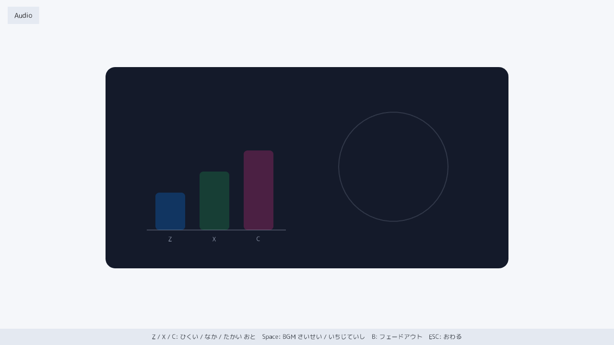
examples/audio）。効果音のリング・BGM のディスク。効果音を色つきのバー、BGM を回るディスクで見せます。Z / X / C で同じ音を高さ（再生速度）だけ変えて鳴らし分け、Space で再生・一時停止・続きから、B でフェードアウト。ゲーム自身は音の仕組みを持たず、hud.play / hud.music でエンジンに再生を頼みます。
使う道具: hud.play / hud.music / hud.pauseMusic / hud.resumeMusic / hud.stopMusic / in.pressed
examples/audio/audio_dll.cpp ── 全 115 行。mitiru new で作るプロジェクトの src/main.cpp をこれ 1 つに置き換えれば、そのまま mitiru run で動きます。GitHub ↗
// audio — 音を鳴らし、いまどの音が鳴っているかを画面でも見せる章。 // 中央の暗い計器に、効果音 3 つの専用バー (Z=低い / X=中くらい / C=高い) と、 // BGM を表す回るディスク (再生中=回る / 一時停止=止まったまま / フェード=薄れて消える) が映る。 #include <algorithm> // std::max / std::min #include <cmath> // std::sin / std::cos / std::fmod #include <mitiru.hpp> #include "../common/chapter_hud.hpp" // 章ラベル + 操作帯 + 共通の配色 using namespace mitiru; // 効果音 (SE) は 3 つのキーに 1 対 1 で割り当てる。同じ音 (ping) を再生速度だけ変えて // 高さを鳴らし分ける。押したキーのバーだけが強く光り + 輪が弾け、他の 2 本は静かなまま。 constexpr Key kSeKey[3] = {Key::Z, Key::X, Key::C}; // 低・中・高 constexpr float kSePitch[3] = {0.75f, 1.0f, 1.5f}; // 再生速度 = 音の高さ constexpr Color kSeCol[3] = {theme::kBlue, theme::kGreen, theme::kPink}; // 音ごとの色 constexpr const char* kSeLbl[3] = {"Z", "X", "C"}; // バーの下に出すキー名 // BGM の状態。ゲーム自身は音を鳴らす仕組みを持たず、host に「こう鳴らして」と頼むだけ。 // いま再生中か・止めているかは、ゲームが自分で覚えておく。 enum class Bgm : int { Stopped, Playing, Paused }; // 中心 c・半径 r の円周上で、角度 a の点を返す (回転する線や縁の目印に使う)。 static Vec2 onCircle(Vec2 c, float r, float a) { return Vec2{c.x + r * std::cos(a), c.y + r * std::sin(a)}; } struct Audio07 { Bgm bgm = Bgm::Stopped; float seGlow[3] = {0.0f, 0.0f, 0.0f}; // 各バーの残り光 (押した瞬間 1 → だんだん 0 へ) float spin = 0.0f; // ディスクの回転角。再生中だけ進む (止めれば回転も止まる) float bgmLvl = 0.0f; // ディスクの見える濃さ。再生=1 / 一時停止=0.5 / 停止=0 へ滑らかに寄る void update(Input in, Hud hud, float dt) { if (in.cancelPressed()) { hud.quit(); } // ESC で終わる // Z / X / C: それぞれ専用の効果音を 1 発鳴らし、そのバーの残り光を立てる。 for (int i = 0; i < 3; ++i) { // 効果音は BGM を邪魔しないよう、控えめな音量 (0.6) で鳴らす。 // こうすれば BGM を流したまま効果音を重ねても、両方きちんと聞こえる。 if (in.pressed(kSeKey[i])) { hud.play("ping", 0.6f, kSePitch[i]); seGlow[i] = 1.0f; } } // Space: 再生 → 一時停止 → 続きから、と切り替える (一時停止は再生位置を覚えている)。 if (in.pressed(Key::Space)) { if (bgm == Bgm::Stopped) { hud.music("bgm", true, 0.35f); bgm = Bgm::Playing; } else if (bgm == Bgm::Playing) { hud.pauseMusic(); bgm = Bgm::Paused; } else { hud.resumeMusic(); bgm = Bgm::Playing; } } // B: 1.5 秒かけて薄れて停止する (再生位置は捨てるので、次の Space は最初から)。 if (in.pressed(Key::B) && bgm != Bgm::Stopped) { hud.stopMusic(1.5f); bgm = Bgm::Stopped; } // 各バーの残り光をだんだん減らす。 for (int i = 0; i < 3; ++i) { seGlow[i] = std::max(0.0f, seGlow[i] - dt * 2.2f); } // ディスクの濃さ bgmLvl を、状態に応じた目標値へ少しずつ近づける (急に変えず滑らかに = フェードの見た目)。 float target = 0.0f; // 停止中は 0 if (bgm == Bgm::Playing) { target = 1.0f; } else if (bgm == Bgm::Paused) { target = 0.5f; } bgmLvl += (target - bgmLvl) * std::min(1.0f, dt * 3.0f); if (bgm == Bgm::Playing) { spin = std::fmod(spin + dt * 2.2f, deg(360.0f)); } } void draw(Screen& s) const { s.fillScreen(theme::kPaper); chapterTitle(s, "Audio"); // 光や脈動は白地では見えないので、計器は暗いカードの中で見せる。 s.drawRoundedRect(Rect{220.0f, 140.0f, 840.0f, 420.0f}, theme::kCard, 20.0f); // 左: 効果音の 3 本のバー。ふだんは薄く見え、鳴らした 1 本だけ強く光り + 輪が弾ける。 const float baseY = 480.0f; s.drawLine(Vec2{306.0f, baseY}, Vec2{596.0f, baseY}, theme::kCardInk.withAlpha(0.35f), 2.0f); for (int i = 0; i < 3; ++i) { const float h = 78.0f + 44.0f * static_cast<float>(i); // 低い音ほど短いバー const float x = 324.0f + 92.0f * static_cast<float>(i); const float g = seGlow[i]; s.drawRoundedRect(Rect{x, baseY - h, 62.0f, h}, kSeCol[i].withAlpha(0.26f + 0.74f * g), 8.0f); // バーの下にキー名 (Z/X/C)。位置とキーの対応で「どれが鳴ったか」が読める。 s.drawTextInRect(Rect{x, baseY + 8.0f, 62.0f, 22.0f}, kSeLbl[i], theme::kCardInk.withAlpha(0.9f), 18.0f, Screen::TextAlignH::Center, Screen::TextAlignV::Middle); if (g > 0.0f) // 鳴った本の上で輪が弾ける (1→0 につれ外へ広がって薄れる) { s.glowRing(x + 31.0f, baseY - h - 24.0f, 20.0f + 70.0f * (1.0f - g), kSeCol[i].withAlpha(0.9f * g), 2.0f, 9.0f, 44); } } // 右: BGM を表す回るディスク。消えているときも位置が分かるよう、薄い外枠は常に描く。 const Vec2 disc{820.0f, 348.0f}; const float R = 104.0f; s.drawCircleFrame(disc, R + 10.0f, theme::kCardInk.withAlpha(0.22f), 2.0f); if (bgmLvl > 0.01f) { const float lv = bgmLvl; s.glowRing(disc.x, disc.y, R + 12.0f + 9.0f * std::sin(spin * 3.0f), theme::kBlue.withAlpha(0.5f * lv), 2.0f, 8.0f, 40); // 回転と合わせて脈打つ輪 s.fillCircle(disc.x, disc.y, R, rgba(18, 28, 52, static_cast<int>(235.0f * lv))); s.drawCircleFrame(disc, R, theme::kBlue.withAlpha(0.9f * lv), 3.0f); for (int k = 0; k < 3; ++k) // 回る 3 本の線と縁の目印 (角度が spin で回る = 再生中の合図) { const float ang = spin + deg(120.0f * static_cast<float>(k)); const Vec2 rim = onCircle(disc, R - 14.0f, ang); s.drawLine(disc, rim, theme::kBlue.withAlpha(0.8f * lv), k == 0 ? 5.0f : 2.0f); s.fillCircle(rim.x, rim.y, 6.0f, theme::kPink.withAlpha(0.9f * lv)); } s.fillCircle(disc.x, disc.y, 15.0f, theme::kBlue.withAlpha(lv)); // 中心の軸 } chapterControls(s, "Z / X / C: ひくい / なか / たかい おと Space: BGM さいせい / いちじていし B: フェードアウト ESC: おわる"); } }; // 自動テスト中は実際には音は鳴らないが、再生を頼む処理がきちんと動くことは確認できる。 MITIRU_GAME(Audio07);
HTML の HUD
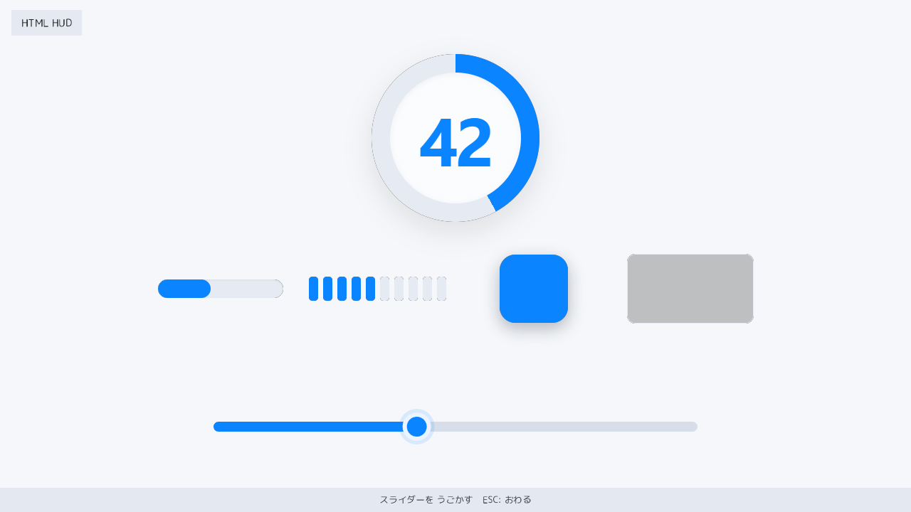
examples/html_hud）。ひとつの値を 6 つの HTML 表示へ。下のスライダー（C++ が描く）を動かすと、ひとつの値が上に重なった 6 つの HTML/CSS 表示（円ゲージ・大きな数字・横バー・pips・色面・折れ線）へ一斉に伝わります。C++ は値を送るだけ、表示の更新は HTML 側の data-m-* 属性が受け持ち、JavaScript は 1 行も書きません。
使う道具: hud.set / data-m-text / data-m-style / data-m-class / data-m-spark-push
examples/html_hud/html_hud_dll.cpp ── 全 74 行。mitiru new で作るプロジェクトの src/main.cpp をこれ 1 つに置き換えれば、そのまま mitiru run で動きます。GitHub ↗
// html_hud — C++ が持っている 1 つの数値を、HTML の 6 つの表示へ同時に映す例。 // 下のスライダー (これは C++ が描いている) を動かすと level という 1 つの値が変わり、 // その値を HTML へ送ると、上に重なった 6 つの表示 (ゲージ・数字・バー・pips・色・折れ線) が // 一斉に同じ値へ動く。JavaScript は 1 行も書かない。HTML に data-m-... と書いておくだけで、 // エンジンが「C++ の値を HTML へ自動で反映」してくれる。 // セットで examples/html_hud/assets/scene.html を読むと、値を受け取って表示する側が分かる。 // この章で使う仕組み: マウス入力 (Input) / C++ から HTML へ値を送る hud.set(...) / // HTML 側の data-m-text・style・class・repeat・spark-push #include <algorithm> // std::clamp #include <cstdio> // std::snprintf (pips を JSON 配列に組む) #include <mitiru.hpp> #include "../common/chapter_hud.hpp" // 章ラベル + 操作帯 + 共通パレット using namespace mitiru; // スライダーの寸法 (論理解像度 1280x720)。トラックは画面下、その上に HTML 表示の領域を空ける。 constexpr float kTrackL = 300.0f, kTrackR = 980.0f, kTrackY = 600.0f, kThumbR = 20.0f; // この章が持つ状態は、たった 2 つ。level が「画面じゅうの表示が映す唯一の数値」で、 // dragging は「今つまみをつかんでいるか」。この level 1 つを HTML の 6 表示すべてへ // 送って見せるのが、この章の主題。 struct HtmlHud { float level = 42.0f; // 0..100。全ての表示ウィジェットが映す唯一の値 bool dragging = false; // つまみをつかんでいる間 true void update(Input in, Hud hud, float) { if (in.cancelPressed()) { hud.quit(); } // ESC で終わる const float mx = in.mouseX(), my = in.mouseY(); if (in.mousePressed(0) && onTrack(mx, my)) { dragging = true; } // つまみ / トラックをつかむ if (!in.mouseDown(0)) { dragging = false; } if (dragging) { level = std::clamp((mx - kTrackL) / (kTrackR - kTrackL) * 100.0f, 0.0f, 100.0f); } pushHud(hud); } // トラック周辺 (つかみやすい広めの帯) にマウスがあるか。 static bool onTrack(float x, float y) { return x >= kTrackL - 30.0f && x <= kTrackR + 30.0f && y >= kTrackY - 44.0f && y <= kTrackY + 44.0f; } // level を HTML へ送る。送るのは level 本体と、level から作った pips の列 (10 個のうち N 個を点灯) の 2 つだけ。 // pips も level だけから決まるので、実質「1 つの値」を送っているのと同じ。 // HTML 側はこの値を受け取って表示を更新するだけで、計算は C++ 側で終わっている。 void pushHud(Hud hud) const { const int v = static_cast<int>(level + 0.5f); hud.set("view.level", v); char json[192]; int n = std::snprintf(json, sizeof(json), "["); for (int i = 0; i < 10; ++i) { n += std::snprintf(json + n, sizeof(json) - static_cast<std::size_t>(n), "%s{\"on\":%d}", i ? "," : "", (i * 10 < v) ? 1 : 0); } std::snprintf(json + n, sizeof(json) - static_cast<std::size_t>(n), "]"); hud.set("view.pips", json); } // C++ が直接描くのは、背景とスライダー (レール + 塗り + つまみ) だけ。 // 6 つの値表示は、上に重なった HTML/CSS が受け持つ。 // つまり「下のスライダー = 値を決める場所」「上の HTML = その値を見せる場所」。 void draw(Screen& s) const { s.fillScreen(theme::kPaper); const float thumbX = kTrackL + level / 100.0f * (kTrackR - kTrackL); s.drawRoundedRect(Rect{kTrackL, kTrackY - 7.0f, kTrackR - kTrackL, 14.0f}, theme::kFrame, 7.0f); // トラック s.drawRoundedRect(Rect{kTrackL, kTrackY - 7.0f, thumbX - kTrackL, 14.0f}, theme::kBlue, 7.0f); // 塗り (0→つまみ) s.fillCircle(thumbX, kTrackY, kThumbR + 5.0f, rgba(10, 132, 255, dragging ? 70 : 32)); // つまみの暈 s.fillCircle(thumbX, kTrackY, kThumbR, theme::kBlue); // つまみ s.drawRing(Vec2{thumbX, kTrackY}, kThumbR, kThumbR - 6.0f, rgba(255, 255, 255, 235)); // つまみの白縁 chapterTitle(s, "HTML HUD"); chapterControls(s, "スライダーを うごかす ESC: おわる"); } }; // 実行: mitiru_host.exe html_hud/html_hud.dll MITIRU_GAME(HtmlHud);
HTML のメニュー
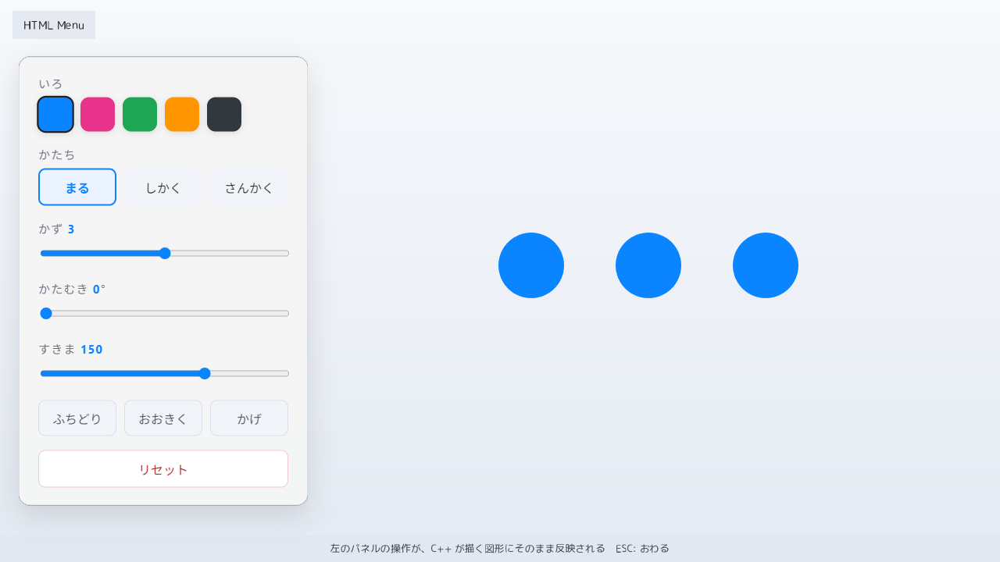
examples/html_menu）。HTML を触ると C++ の図形が変わる。html_hud の逆向きです。左の HTML パネルを触ると、その操作が C++ に届き、右の図形が色・形・数・傾き・ふちどりなどで変わります。HTML → C++ は data-m-action の信号だけを送り、状態は C++ が持ちます。リセットは確認ダイアログを 1 枚挟みます。図形はすべて C++ が描き、JavaScript は書きません。
使う道具: in.action / in.actionPayload / hud.set / data-m-action / data-m-payload / data-m-confirm
examples/html_menu/html_menu_dll.cpp ── 全 148 行。mitiru new で作るプロジェクトの src/main.cpp をこれ 1 つに置き換えれば、そのまま mitiru run で動きます。GitHub ↗
// html_menu — HTML の操作パネルを触ると、その操作が C++ に届き、C++ が描く図形が目に見えて変わる例。 // 左のパネルで色・形・数・傾き・間隔や、ふちどり・大きさ・影を選ぶと、右側に C++ が描いた図形が // その場で変わる。JavaScript は 1 行も書かない。 // 前章 html_hud が「C++ → HTML (値を見せる)」なら、この章は逆向きの「HTML → C++ (操作を伝える)」。 // セットで examples/html_menu/assets/scene.html を読むと、操作を送り出す側が分かる。 // この章で使う仕組み: HTML の操作を受け取る in.action(...) / それに付いてきたデータを読む in.actionPayload(...) / // C++ から HTML へ値を返す hud.set(...) / HTML 側の data-m-action・payload・repeat・confirm #include <cmath> // std::sqrt / std::fabs (さんかくの縁取りの計算) #include <cstdint> // std::uint32_t #include <cstdio> // std::snprintf (選択肢リストの JSON 組み立て) #include <cstdlib> // std::atoi #include <cstring> // std::strstr / std::strlen #include <mitiru.hpp> #include "../common/chapter_hud.hpp" // 章ラベル + 操作帯 (全章共通の書式) using namespace mitiru; // 選べる色の一覧 (ただのデータ)。name はボタンの説明、rgb は図形の色 (パネルの色見本にも使う)。 // 形は 0=まる / 1=しかく / 2=さんかく の 3 種類。 struct Swatch { const char* name; std::uint32_t rgb; }; constexpr Swatch kColors[] = { { "あお", 0x0A84FF }, { "もも", 0xE8338A }, { "みどり", 0x1FA654 }, { "だいだい", 0xFF9500 }, { "すみ", 0x33373E }, }; constexpr const char* kShapes[] = { "まる", "しかく", "さんかく" }; constexpr int kColorCount = static_cast<int>(sizeof(kColors) / sizeof(kColors[0])); constexpr int kShapeCount = static_cast<int>(sizeof(kShapes) / sizeof(kShapes[0])); // HTML が送ってくる付随データ (例: {"id":2}) から、key の数値を 1 つ取り出す。 // 見つからなければ -1。届くのは自分の scene.html が送る形だけなので、簡単な探索で十分。 int payloadInt(const char* json, const char* key) { char pat[16]; std::snprintf(pat, sizeof(pat), "\"%s\":", key); const char* p = (json != nullptr) ? std::strstr(json, pat) : nullptr; return (p != nullptr) ? std::atoi(p + std::strlen(pat)) : -1; } struct HtmlMenu { int color = 0, shape = 0, count = 3; // 選択中の色 / 形、描く個数 (1..5) int tilt = 0, gap = 150; // かたむき (度、0..45)、図形どうしの間隔 (90..180) bool outline = false, big = false, shadow = false; // ふちどり / 大きく / 影 void update(Input in, Hud hud, float) { if (in.cancelPressed()) { hud.quit(); } // ESC で終わる // HTML パネルから届いた操作で、C++ の状態を書き換える。 // 状態を持っているのはいつも C++ 側で、HTML は「こうしてほしい」と action で頼むだけ。 if (in.action("pick.color")) { const int v = payloadInt(in.actionPayload("pick.color"), "id"); if (v >= 0 && v < kColorCount) { color = v; } } if (in.action("pick.shape")) { const int v = payloadInt(in.actionPayload("pick.shape"), "id"); if (v >= 0 && v < kShapeCount) { shape = v; } } if (in.action("set.count")) { const int v = payloadInt(in.actionPayload("set.count"), "v"); if (v >= 1 && v <= 5) { count = v; } } if (in.action("set.tilt")) { const int v = payloadInt(in.actionPayload("set.tilt"), "v"); if (v >= 0 && v <= 45) { tilt = v; } } if (in.action("set.gap")) { const int v = payloadInt(in.actionPayload("set.gap"), "v"); if (v >= 90 && v <= 180){ gap = v; } } if (in.action("toggle.outline")) { outline = !outline; } if (in.action("toggle.big")) { big = !big; } if (in.action("toggle.shadow")) { shadow = !shadow; } if (in.action("reset")) { color = 0; shape = 0; count = 3; tilt = 0; gap = 150; outline = false; big = false; shadow = false; } pushPanel(hud); } // パネルへ「選べる一覧」と「今の値」を送る。どれを選んでいるか (sel) の判断も C++ が行い、 // HTML はその結果を見た目に反映するだけ。 void pushPanel(Hud hud) const { char colors[384]; int n = std::snprintf(colors, sizeof(colors), "["); for (int i = 0; i < kColorCount; ++i) n += std::snprintf(colors + n, sizeof(colors) - static_cast<std::size_t>(n), "%s{\"id\":%d,\"name\":\"%s\",\"hex\":\"%06X\",\"sel\":%d}", i ? "," : "", i, kColors[i].name, kColors[i].rgb, (i == color) ? 1 : 0); std::snprintf(colors + n, sizeof(colors) - static_cast<std::size_t>(n), "]"); hud.set("view.colors", colors); char shapes[256]; n = std::snprintf(shapes, sizeof(shapes), "["); for (int i = 0; i < kShapeCount; ++i) n += std::snprintf(shapes + n, sizeof(shapes) - static_cast<std::size_t>(n), "%s{\"id\":%d,\"name\":\"%s\",\"sel\":%d}", i ? "," : "", i, kShapes[i], (i == shape) ? 1 : 0); std::snprintf(shapes + n, sizeof(shapes) - static_cast<std::size_t>(n), "]"); hud.set("view.shapes", shapes); hud.set("view.count", count); hud.set("view.tilt", tilt); hud.set("view.gap", gap); hud.set("view.outline", outline); hud.set("view.big", big); hud.set("view.shadow", shadow); } // 図形はすべて C++ が描く。パネルで選んだ値が、ここにそのまま反映される // (パネル操作 → C++ の状態 → この描画、という流れの終点)。 void draw(Screen& s) const { s.drawGradientRect(Rect{0.0f, 0.0f, 1280.0f, 720.0f}, hex(0xF7F9FC), hex(0xE4EAF2)); const Color c = hex(kColors[color].rgb); const float r = big ? 62.0f : 42.0f, g = static_cast<float>(gap), cy = 340.0f; const float x0 = 830.0f - g * static_cast<float>(count - 1) * 0.5f; // パネル (左) を避け右側に一列 const bool rot = (tilt != 0); // 傾き 0 のときは回転をかけない (四角形をまっすぐな 1 枚として描ける) for (int i = 0; i < count; ++i) { const float x = x0 + g * static_cast<float>(i); if (shadow) // 影: 図形を右下にずらして薄い墨色で先に描く。ふちどり時はその外形に合わせて広げる { const float sx = x + 9.0f, sy = cy + 13.0f; const Color sc = theme::kInk.withAlpha(0.16f); if (rot) { s.pushRotation(deg(static_cast<float>(tilt)), sx, sy); } if (outline) { drawOutline(s, sx, sy, r, 8.0f, sc); } else { drawFill(s, sx, sy, r, sc); } if (rot) { s.popTransform(); } } if (rot) { s.pushRotation(deg(static_cast<float>(tilt)), x, cy); } // 傾きを図形に適用 if (outline) { drawOutline(s, x, cy, r, 8.0f, theme::kInk); } drawFill(s, x, cy, r, c); if (rot) { s.popTransform(); } } chapterTitle(s, "HTML Menu"); chapterControls(s, "左のパネルの操作が、C++ が描く図形にそのまま反映される ESC: おわる"); } // 選択中の形で 1 つ描く (まる / しかく / さんかく)。 void drawFill(Screen& s, float x, float y, float r, Color c) const { if (shape == 0) { s.fillCircle(x, y, r, c); } else if (shape == 1) { s.drawRectCentered(x, y, r * 2.0f, r * 2.0f, c); } else { s.drawTriangle(Vec2{x, y - r}, Vec2{x - r, y + r}, Vec2{x + r, y + r}, c); } } // ふちどり: 図形を辺から均一に d だけ外へ広げて濃色で描く (後ろに敷く)。まる・しかくは // そのまま一回り大きくすればよい。さんかくは、内接円の中心から相似に広げると 3 辺が均一に // d だけ外へ出て、角も鋭いまま保たれる (単純に大きくすると辺ごとに太さが変わってしまう)。 void drawOutline(Screen& s, float x, float y, float r, float d, Color c) const { if (shape == 0) { s.fillCircle(x, y, r + d, c); return; } if (shape == 1) { s.drawRectCentered(x, y, (r + d) * 2.0f, (r + d) * 2.0f, c); return; } const Vec2 v[3] = { {x, y - r}, {x - r, y + r}, {x + r, y + r} }; auto len = [](Vec2 p, Vec2 q) { return std::sqrt((p.x - q.x) * (p.x - q.x) + (p.y - q.y) * (p.y - q.y)); }; const float a = len(v[1], v[2]), b = len(v[2], v[0]), cc = len(v[0], v[1]), per = a + b + cc; const Vec2 inc{ (a * v[0].x + b * v[1].x + cc * v[2].x) / per, (a * v[0].y + b * v[1].y + cc * v[2].y) / per }; const float area = 0.5f * std::fabs((v[1].x - v[0].x) * (v[2].y - v[0].y) - (v[2].x - v[0].x) * (v[1].y - v[0].y)); const float rin = 2.0f * area / per; // 内接円の半径 const float k = (rin + d) / rin; // 中心から k 倍に広げると、辺が d だけ外へ出る Vec2 g[3]; for (int j = 0; j < 3; ++j) { g[j] = { inc.x + (v[j].x - inc.x) * k, inc.y + (v[j].y - inc.y) * k }; } s.drawTriangle(g[0], g[1], g[2], c); } }; // 実行: mitiru_host.exe html_menu/html_menu.dll MITIRU_GAME(HtmlMenu);
観察
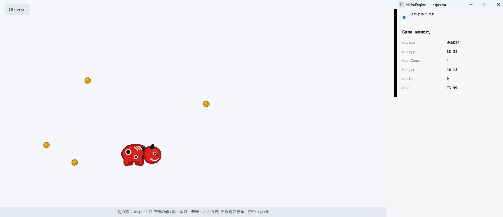
examples/observe）。赤べこの動きと、別窓 Inspector に並ぶ内部の値。赤べこが、腹が減れば餌へ歩き、疲れれば休みます。画面に出るのは動きだけで、腹・体力・機嫌・今の行動といった内部の値は表示しません。その値は、--inspect で開く Inspector（MitiruEngine の観測窓）に、ゲームを止めずにライブで並びます。見せたい値を MITIRU_REFLECT に書くだけで、名前付きで窓に出ます。動きを見て楽しみ、値を見て理由を知る、という二面を分けて見せる章です。
使う道具: MITIRU_REFLECT / MITIRU_GAME / FixedVec / FixedString
examples/observe/observe_dll.cpp ── 全 224 行。mitiru new で作るプロジェクトの src/main.cpp をこれ 1 つに置き換えれば、そのまま mitiru run で動きます。GitHub ↗
// observe — 画面に見えるのは「結果」だけ、という例。 // ここでは赤べこ (会津の張り子牛) が、腹が減れば餌へ歩き、疲れれば休む。画面に映るのは // その動き — 首を振る / 跳ねる / 表情が変わる / 餌へ寄る — だけ。 // 一方で、なぜ今それをしているか (腹・体力・機嫌・今の行動) という内部の値は画面に出さない。 // その内部の値は、ゲームを止めずに別の窓 (inspector) から live で読める。これが「観測」。 // 画面を見て動きを楽しみ、値を見て理由を知る、という二面を分けて見せるのがこの章の主旨。 // 使う機能: 状態を登録する MITIRU_REFLECT (ファイル末尾) / 観測窓つきで起動する mitiru_host --inspect #include <algorithm> // std::min / std::max #include <cmath> // std::sqrt / std::sin / std::fabs #include <cstring> // std::strcmp #include <mitiru.hpp> #include <mitiru/render/Texture.hpp> // 画像を直接渡して描く drawSprite のため #include "../common/chapter_hud.hpp" // 章ラベル + 操作帯 (全章共通の書式) using namespace mitiru; constexpr float kScreenW = 1280.0f, kScreenH = 720.0f; constexpr float kMinX = 120.0f, kMaxX = kScreenW - 120.0f; // 赤べこと餌が動ける範囲 constexpr float kMinY = 240.0f, kMaxY = kScreenH - 130.0f; // (タイトルと操作帯を避ける) // 赤べこは「胴」と「頭 (表情ちがい 4 枚)」の 2 枚を重ねて 1 匹になる。頭を首のところで // 回すと、赤べこ名物の「こっくり」首振りになる。画像は可変長データを持つのでゲームの状態 // struct には入れられない (状態はポインタを持たない単純なデータの塊に保つ決まり)。そこで // 画像はこのファイル直下の変数へ一度だけ読み込む。読み込み失敗時は value_or で空画像にする。 static const render::Texture kBody = render::Texture::fromFile( "observe/assets/sprites/akabeko_body.png").value_or(render::Texture{}); static const render::Texture kHeadNeutral = render::Texture::fromFile( "observe/assets/sprites/akabeko_head_neutral.png").value_or(render::Texture{}); static const render::Texture kHeadHappy = render::Texture::fromFile( "observe/assets/sprites/akabeko_head_happy.png").value_or(render::Texture{}); static const render::Texture kHeadHungry = render::Texture::fromFile( "observe/assets/sprites/akabeko_head_hungry.png").value_or(render::Texture{}); static const render::Texture kHeadSleepy = render::Texture::fromFile( "observe/assets/sprites/akabeko_head_sleepy.png").value_or(render::Texture{}); // 餌も画像 (スプライト) で描く。赤べこと同じ描き方にそろえておくと、餌を先に・赤べこを後に // 描いたときに、赤べこがちゃんと餌の前面に出る。 static const render::Texture kFood = render::Texture::fromFile( "observe/assets/sprites/akabeko_food.png").value_or(render::Texture{}); constexpr float kScale = 0.5f; // 画像の何倍で描くか (絵が高解像度なので縮小して使う) // 首の支点 (頭が回る中心)。画像の中心 (152,116) から (+32,+8) の位置 = 首のつけ根。 constexpr float kPivotOffX = 32.0f, kPivotOffY = 8.0f; struct Food { float x = 0.0f, y = 0.0f; }; struct Critter { float x = kScreenW * 0.5f, y = kScreenH * 0.5f; bool faceLeft = false; // 進む向き (左を向いているか) // 内部の欲求 — 行動を決める値。画面には出さず、観測窓 (inspector) だけで見える。 float hunger = 25.0f; // 0..100 時間で上がる。高くなると餌を探す float energy = 100.0f; // 0..100 動くと減り、休むと回復する float mood = 70.0f; // 0..100 腹が満ちて元気なほど高い FixedString<12> action; // 今の行動名 (WANDER / SEEK_FOOD / EAT / REST) // 目標地点・餌・乱数・見た目の位相など、動きを作るための内部データ。 float goalX = kScreenW * 0.5f, goalY = kScreenH * 0.5f, wanderT = 0.0f; float nodPhase = 0.0f, hopPhase = 0.0f; // 首振り・跳ねのサイン波の位相 FixedVec<Food, 8> foods; int foodCount = 0; // 今 画面に出ている餌の数 (食べると減り、時々わいて増える。観測窓で見える) int meals = 0; // これまでに食べた餌の総数 (観測窓で見える) float spawnT = 3.0f; // 次に餌がわくまでの秒 unsigned int rng = 2463534242u; // 決定論的な乱数 (毎回同じ動き = 巻き戻し / リプレイと相性が良い) bool started = false; bool resting = false; // 休憩中か (いちど休むと十分回復するまで続く) float rnd() // 0..1 の乱数 { rng ^= rng << 13; rng ^= rng >> 17; rng ^= rng << 5; return static_cast<float>(rng & 0xFFFFFF) / 16777216.0f; } Food spawnFood() { return { kMinX + rnd() * (kMaxX - kMinX), kMinY + rnd() * (kMaxY - kMinY) }; } void update(Input /*in*/, float dt) { if (!started) // 最初のフレームで餌を撒く { started = true; for (int i = 0; i < 3; ++i) { (void)foods.push_back(spawnFood()); } action.set("WANDER"); } // 時々あたらしい餌がわく (最大 8 個)。食べると減るので、画面の餌の数はいつも変わる。 spawnT -= dt; if (spawnT <= 0.0f) { spawnT = 3.0f; if (foods.size() < 8) { (void)foods.push_back(spawnFood()); } } hunger = std::min(100.0f, hunger + 4.5f * dt); // だんだん腹が減る // 一番近い餌を探す int nearest = -1; float nd = 1e18f; for (std::size_t i = 0; i < foods.size(); ++i) { const float d = sq(foods[i].x - x) + sq(foods[i].y - y); if (d < nd) { nd = d; nearest = static_cast<int>(i); } } // 疲れたら休む。いちど休み始めたら十分回復するまで続く (だから寝姿がしばらく見られる)。 if (resting) { if (energy >= 75.0f) { resting = false; } } else { if (energy < 28.0f) { resting = true; } } // 行動を決める。優先度: 休む > 腹が減った > それ以外はうろうろ。 float speed = 0.0f; if (resting) { action.set("REST"); energy = std::min(100.0f, energy + 20.0f * dt); } else if (hunger > 60.0f && nearest >= 0) { action.set("SEEK_FOOD"); goalX = foods[nearest].x; goalY = foods[nearest].y; speed = 150.0f; energy -= 6.0f * dt; if (nd < 40.0f * 40.0f) // 餌に届いた → 食べる { hunger = std::max(0.0f, hunger - 55.0f); action.set("EAT"); foods.removeAt(static_cast<std::size_t>(nearest)); // その餌は消える ++meals; } } else { action.set("WANDER"); speed = 85.0f; energy -= 2.5f * dt; wanderT -= dt; if (wanderT <= 0.0f || sq(goalX - x) + sq(goalY - y) < 44.0f * 44.0f) { goalX = kMinX + rnd() * (kMaxX - kMinX); goalY = kMinY + rnd() * (kMaxY - kMinY); wanderT = 2.0f + rnd() * 2.0f; } } energy = clampf(energy, 0.0f, 100.0f); // 目標へ向かって進む const float dx = goalX - x, dy = goalY - y; const float len = std::sqrt(dx * dx + dy * dy) + 0.001f; x += (dx / len) * speed * dt; y += (dy / len) * speed * dt; if (speed > 1.0f) { faceLeft = (dx < 0.0f); } // 進む向きに顔を向ける mood = clampf(100.0f - hunger * 0.5f - (100.0f - energy) * 0.3f, 0.0f, 100.0f); // 見た目の位相を進める。機嫌が良いほど首振りは速く、元気なほど跳ねが速い。 nodPhase += (2.0f + (mood / 100.0f) * 3.0f) * dt; hopPhase += (5.0f + (energy / 100.0f) * 3.0f) * dt; foodCount = static_cast<int>(foods.size()); // 観測窓に出す用に、今の餌の数を控える } // 今の気分に合う頭 (表情) を選ぶ。休む→眠い / 腹ぺこ→ひもじい / 上機嫌→にっこり / それ以外→ふつう。 const render::Texture& pickHead() const { if (std::strcmp(action.c_str(), "REST") == 0) { return kHeadSleepy; } if (hunger > 55.0f) { return kHeadHungry; } if (mood > 68.0f) { return kHeadHappy; } return kHeadNeutral; } // 赤べこ 1 匹を中心 (cx, cy)・大きさ kScale で描く。胴を描いてから、頭を首の支点まわりに // nodDeg 度ぶん回して重ねる。faceLeft なら胴・頭ともに左右反転し、支点も鏡像にする。 void drawBeko(Screen& s, float cx, float cy, float nodDeg) const { const float w = kBody.width() * kScale, h = kBody.height() * kScale; const Rect dst{ cx - w * 0.5f, cy - h * 0.5f, w, h }; const Rect srcBody{ 0.0f, 0.0f, kBody.width() * 1.0f, kBody.height() * 1.0f }; s.drawSprite(kBody, dst, srcBody, color::White, faceLeft); const render::Texture& head = pickHead(); const Rect srcHead{ 0.0f, 0.0f, head.width() * 1.0f, head.height() * 1.0f }; const float side = faceLeft ? -1.0f : 1.0f; const float pivotX = cx + side * kPivotOffX * kScale; // 首の支点 (向きで左右反転) const float pivotY = cy + kPivotOffY * kScale; s.pushRotation(deg(nodDeg * side), pivotX, pivotY); // 支点まわりに頭を回す s.drawSprite(head, dst, srcHead, color::White, faceLeft); s.popTransform(); } void draw(Screen& s) const { s.fillScreen(theme::kPaper); // 餌 (スプライト。赤べこより先に描くので、あとで描く赤べこが前面になる) for (std::size_t i = 0; i < foods.size(); ++i) { const float fs = 26.0f; // 画面での大きさ (直径) const Rect dst{ foods[i].x - fs * 0.5f, foods[i].y - fs * 0.5f, fs, fs }; const Rect src{ 0.0f, 0.0f, kFood.width() * 1.0f, kFood.height() * 1.0f }; s.drawSprite(kFood, dst, src, color::White, false); } // 首振り: サイン波でこっくり。機嫌が良いと大きく、疲れていると小さくなる。 const float nodAmp = (3.5f + (mood / 100.0f) * 5.0f) * (0.45f + 0.55f * energy / 100.0f); const float nodDeg = std::sin(nodPhase) * nodAmp; // 跳ね: 元気で休んでいないときだけ、周期的に軽くホップする。 const bool lively = (energy > 60.0f) && (std::strcmp(action.c_str(), "REST") != 0); const float hop = lively ? 12.0f * std::fabs(std::sin(hopPhase)) : 0.0f; // 赤べこは餌より前面 (餌を先に描いてある) に、跳ねぶんだけ上へずらして描く。 drawBeko(s, x, y - hop, nodDeg); chapterTitle(s, "Observe"); chapterControls(s, "別の窓 --inspect で 内部の値 (腹・体力・機嫌・えさの数) を観測できる ESC: おわる"); } static float sq(float v) { return v * v; } static float clampf(float v, float lo, float hi) { return v < lo ? lo : (v > hi ? hi : v); } }; // 状態の構造をエンジンに登録する。読ませたいフィールド名を並べるだけでよい。これだけで、外の // 観測ツールが hunger / energy / mood / action を名前付きのデータとして読めるようになる。 MITIRU_REFLECT(Critter, energy, hunger, mood, action, foodCount, meals); // 実行: mitiru_host.exe observe/observe.dll --inspect MITIRU_GAME(Critter);
巻き戻し
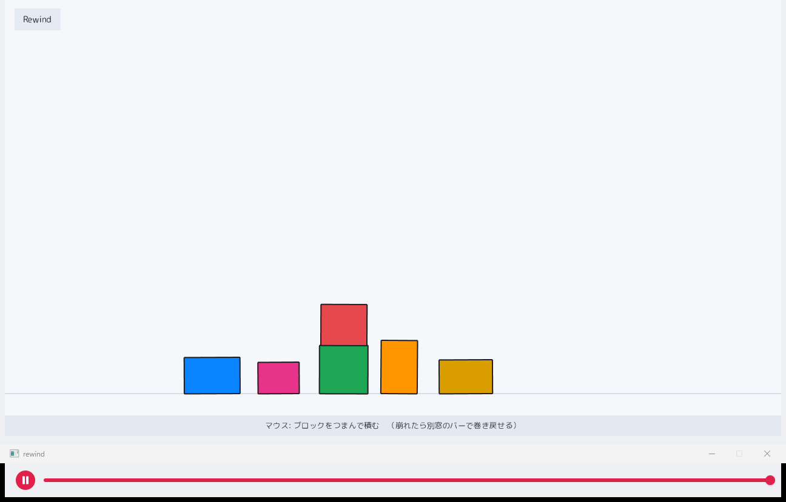
examples/rewind）。積んだブロックと、別窓の巻き戻しシークバー。床のブロックをマウスでつまんで積みます。位置・速度・回転を持つブロックが重力・接触・まさつで振る舞います。状態を 1 つの構造体にまとめてあるので、エンジンが毎フレーム記録し、崩れても別窓のバーを動かせば物理の途中経過ごと過去のフレームへ戻せます。
使う道具: MITIRU_GAME / MITIRU_REWIND_BUFFER / FixedVec / in.mouseDown
examples/rewind/rewind_dll.cpp ── 全 427 行。mitiru new で作るプロジェクトの src/main.cpp をこれ 1 つに置き換えれば、そのまま mitiru run で動きます。GitHub ↗
// rewind ―「時間を巻き戻す」を体験する章 (ブロック積み) // ゲームの状態をぜんぶ 1 つの構造体にまとめておくと、エンジンが毎フレームその中身を // 自動で覚えてくれる。だから、あとから好きな過去のフレームへ丸ごと戻せる。ここでは // 物理 (位置・速度・回転) もその構造体に入っているので、崩れたブロックも巻き戻せる。 // あそびかた: 床に置かれたブロックをマウスでつまんで積み上げる。つまんだ点がカーソルに // 引かれ、重力でぶらんぶらん揺れる。崩れたら下の別窓のバーを左へ動かして戻す。 // 使う機能: 状態を 1 つの構造体にまとめる MITIRU_GAME / ポインタを持たない配列 FixedVec #include <algorithm> // std::min / std::max / std::clamp #include <cmath> // std::cos / std::sin / std::fabs #include <cstdint> #include <mitiru.hpp> #include <mitiru/core/FixedVec.hpp> // 長さの上限が決まった配列。ポインタを持たないので構造体ごとまるごとコピーできる #include "../common/chapter_hud.hpp" // 章ラベル + 操作帯 (全章共通の書式) using namespace mitiru; // ── プレイエリアと物理の設定 ────────────────────────────────── constexpr float kScreenW = 1280.0f, kScreenH = 720.0f; constexpr float kCeil = 72.0f, kFloor = 650.0f; // ブロックが動ける範囲 (タイトルと操作帯の間) constexpr float kWallL = 0.0f, kWallR = kScreenW; // 左右のかべ constexpr float kGravity = 1400.0f; // 重力 (下向きの加速度) constexpr int kMaxBlocks = 16; // ブロックの最大数 constexpr int kMaxContacts = 128; // 1 フレームで扱う接触点の最大数 constexpr int kSubsteps = 4; // 1 フレームを何回に分けて解くか (多いほど安定) constexpr int kVelIters = 8; // 速度をならす反復回数 (多いほど積みが安定) constexpr float kMaxV = 1800.0f, kMaxW = 14.0f; // 速度・角速度の上限 (爆発を防ぐ) constexpr float kFriction = 0.5f; // まさつの強さ constexpr float kSlop = 0.4f, kPosPercent = 0.4f; // めり込みの許容と押し戻す割合 constexpr float kGrabPull = 200.0f, kGrabDamp = 16.0f; // つまみのバネと揺れの収まり // ブロックの色は 6 色を順ぐりに使う。 constexpr Color kPalette[6] = { theme::kBlue, theme::kPink, theme::kGreen, theme::kOrange, theme::kAmber, theme::kRed}; // 1 つのブロック。位置・速度・回転をすべて持つ単純なデータ (ポインタなし)。 struct Block { float x = 0.0f, y = 0.0f; // 中心の位置 float angle = 0.0f; // かたむき (ラジアン) float vx = 0.0f, vy = 0.0f; // 速度 float w = 0.0f; // 角速度 (回る速さ) float hw = 20.0f, hh = 20.0f; // 半分の幅・高さ std::uint8_t color = 0; }; // 接触点 1 つぶんの情報 (その場かぎりで使う。状態には入れない)。 // a はブロック番号、b は相手のブロック番号 (かべ・床は -1)。 struct Contact { int a = 0, b = -1; float px = 0.0f, py = 0.0f; // ぶつかっている点 float nx = 0.0f, ny = 0.0f; // 押し戻す向き (a から相手へ) float depth = 0.0f; // めり込んだ深さ }; using Contacts = FixedVec<Contact, kMaxContacts>; // ── ブロックの物理的な性質 (重さ・回りにくさ) ────────────────── inline float blockMass(const Block& b) { return 4.0f * b.hw * b.hh; } // 面積を重さとみなす inline float blockInvMass(const Block& b) { return 1.0f / blockMass(b); } inline float blockInvInertia(const Block& b) // 回りにくさの逆数 (長方形の公式) { const float m = blockMass(b), w = 2.0f * b.hw, h = 2.0f * b.hh; return 1.0f / (m * (w * w + h * h) / 12.0f); } // ブロックの 4 すみの世界座標を求める。 inline void blockCorners(const Block& b, float outX[4], float outY[4]) { const float c = std::cos(b.angle), s = std::sin(b.angle); const float lx[4] = {-b.hw, b.hw, b.hw, -b.hw}; const float ly[4] = {-b.hh, -b.hh, b.hh, b.hh}; for (int i = 0; i < 4; ++i) { outX[i] = b.x + lx[i] * c - ly[i] * s; outY[i] = b.y + lx[i] * s + ly[i] * c; } } // 点 (px, py) がブロックの中に入っているか。 inline bool pointInBlock(const Block& b, float px, float py) { const float c = std::cos(b.angle), s = std::sin(b.angle); const float dx = px - b.x, dy = py - b.y; const float lx = dx * c + dy * s; // ブロックのローカル座標に直す const float ly = -dx * s + dy * c; return std::fabs(lx) <= b.hw && std::fabs(ly) <= b.hh; } // 1 本の向きに 4 すみを射影して、いちばん手前と奥を返す。 inline void projectCorners(const float cx[4], const float cy[4], float nx, float ny, float& mn, float& mx) { mn = mx = cx[0] * nx + cy[0] * ny; for (int i = 1; i < 4; ++i) { const float d = cx[i] * nx + cy[i] * ny; mn = std::min(mn, d); mx = std::max(mx, d); } } // 2 つのブロックが重なっているか調べる (分離軸法)。 // 重なっていれば、いちばん浅い向き (押し戻す向き) とその深さを返す。 struct Sat { bool hit; float nx, ny, depth; }; inline Sat satBoxes(const Block& A, const Block& B) { float ax[4], ay[4], bx[4], by[4]; blockCorners(A, ax, ay); blockCorners(B, bx, by); const float ca = std::cos(A.angle), sa = std::sin(A.angle); const float cb = std::cos(B.angle), sb = std::sin(B.angle); const float axesX[4] = {ca, -sa, cb, -sb}; // 2 つの箱の面の向き 4 本 const float axesY[4] = {sa, ca, sb, cb}; float best = 1e9f, bnx = 0.0f, bny = 0.0f; for (int k = 0; k < 4; ++k) { float mnA, mxA, mnB, mxB; projectCorners(ax, ay, axesX[k], axesY[k], mnA, mxA); projectCorners(bx, by, axesX[k], axesY[k], mnB, mxB); const float overlap = std::min(mxA, mxB) - std::max(mnA, mnB); if (overlap <= 0.0f) { return {false, 0.0f, 0.0f, 0.0f}; } // すき間があれば当たっていない if (overlap < best) { best = overlap; bnx = axesX[k]; bny = axesY[k]; } } if ((B.x - A.x) * bnx + (B.y - A.y) * bny < 0.0f) { bnx = -bnx; bny = -bny; } // A から B へ向ける return {true, bnx, bny, best}; } // つまむブロックが最初から床に置いてある状態を作る。5 個を並べ、1 個だけ上に乗せる。 inline FixedVec<Block, kMaxBlocks> makeInitialBlocks() { FixedVec<Block, kMaxBlocks> v; struct Spec { float hw, hh; }; const Spec floorSpecs[5] = {{46, 30}, {34, 26}, {40, 40}, {30, 44}, {44, 28}}; float edge = 300.0f; // 左から順に置いていく float baseX = 0.0f, baseTop = 0.0f; for (int i = 0; i < 5; ++i) { Block b; b.hw = floorSpecs[i].hw; b.hh = floorSpecs[i].hh; b.x = edge + b.hw; b.y = kFloor - b.hh; // 床の上にのせる b.color = static_cast<std::uint8_t>(i); (void)v.push_back(b); if (i == 2) { baseX = b.x; baseTop = b.y - b.hh; } // 3 個目の上に 1 個積んでおく edge = b.x + b.hw + 30.0f; } Block top; top.hw = 38.0f; top.hh = 34.0f; top.x = baseX; top.y = baseTop - top.hh; top.color = 5; (void)v.push_back(top); return v; } // ゲームの状態をぜんぶこの 1 つの構造体に入れる。 // エンジンはこの中身を毎フレーム自動で記録するので、あとで別窓のバーを動かすと、 // 物理の途中経過ごと過去へ戻せる (崩れる前に戻せばブロックが元どおり積み上がる)。 struct Blocks { FixedVec<Block, kMaxBlocks> blocks = makeInitialBlocks(); int grabIndex = -1; // つまんでいるブロック番号 (-1 = つまんでいない) float grabLocalX = 0.0f, grabLocalY = 0.0f; // つまんだ点 (ブロックのローカル座標) float cursorX = 0.0f, cursorY = 0.0f; // いまのカーソル位置 bool prevDown = false; // 前フレームでマウス左が押されていたか // 押した瞬間、カーソルの下にあるブロックをつまむ。上に描かれているものを優先。 void grabAt(float mx, float my) { for (int i = static_cast<int>(blocks.size()) - 1; i >= 0; --i) { if (!pointInBlock(blocks[i], mx, my)) { continue; } const Block& b = blocks[i]; const float c = std::cos(b.angle), s = std::sin(b.angle); const float dx = mx - b.x, dy = my - b.y; grabLocalX = dx * c + dy * s; // つまんだ点をローカル座標で覚える grabLocalY = -dx * s + dy * c; grabIndex = i; return; } } // つまんだ点をカーソルへ引くバネ。重力で下がろうとするので振り子のように揺れる。 void applyGrabSpring(float h) { Block& b = blocks[grabIndex]; const float c = std::cos(b.angle), s = std::sin(b.angle); const float rx = grabLocalX * c - grabLocalY * s; // つまんだ点の中心からのずれ const float ry = grabLocalX * s + grabLocalY * c; const float wx = b.x + rx, wy = b.y + ry; // つまんだ点のいまの位置 const float pvx = b.vx - b.w * ry, pvy = b.vy + b.w * rx; // その点の速度 const float m = blockMass(b); const float fx = m * (kGrabPull * (cursorX - wx) - kGrabDamp * pvx); const float fy = m * (kGrabPull * (cursorY - wy) - kGrabDamp * pvy); const float im = blockInvMass(b), iI = blockInvInertia(b); b.vx += im * fx * h; b.vy += im * fy * h; b.w += iI * (rx * fy - ry * fx) * h; // 中心からずれた点を引くので回る = 振り子 } // 重力とつまみのバネを速度に足す。 void applyForces(float h) { for (Block& b : blocks) { b.vy += kGravity * h; } if (grabIndex >= 0) { applyGrabSpring(h); } } // 速度ぶんだけ動かし、速度が大きくなりすぎないよう上限をつける。 void integrate(float h) { for (Block& b : blocks) { b.x += b.vx * h; b.y += b.vy * h; b.angle += b.w * h; b.vx = std::clamp(b.vx, -kMaxV, kMaxV); b.vy = std::clamp(b.vy, -kMaxV, kMaxV); b.w = std::clamp(b.w, -kMaxW, kMaxW); b.vx *= 0.999f; // ゆっくり勢いを落として揺れを収める b.vy *= 0.999f; b.w *= 0.99f; } } // 接触点を 1 つ足す (相手がブロックのとき)。 void pushPair(Contacts& out, int i, int j, float px, float py, const Sat& sat) { Contact c; c.a = i; c.b = j; c.px = px; c.py = py; c.nx = sat.nx; c.ny = sat.ny; c.depth = sat.depth; (void)out.push_back(c); } // 2 つのブロックの接触点を集める。相手の箱にめり込んだ角を接触点として使う。 void addPairContacts(int i, int j, Contacts& out) { const Sat sat = satBoxes(blocks[i], blocks[j]); if (!sat.hit) { return; } const Block& A = blocks[i]; const Block& B = blocks[j]; float ax[4], ay[4], bx[4], by[4]; blockCorners(A, ax, ay); blockCorners(B, bx, by); int added = 0; for (int k = 0; k < 4 && added < 2; ++k) if (pointInBlock(A, bx[k], by[k])) { pushPair(out, i, j, bx[k], by[k], sat); ++added; } for (int k = 0; k < 4 && added < 2; ++k) if (pointInBlock(B, ax[k], ay[k])) { pushPair(out, i, j, ax[k], ay[k], sat); ++added; } if (added == 0) { pushPair(out, i, j, (A.x + B.x) * 0.5f, (A.y + B.y) * 0.5f, sat); } } // ブロックが床・かべにめり込んでいたら接触点を足す。 void addBoundaryContacts(int i, Contacts& out) { float cx[4], cy[4]; blockCorners(blocks[i], cx, cy); for (int k = 0; k < 4; ++k) { Contact c; c.a = i; c.b = -1; c.px = cx[k]; c.py = cy[k]; if (cy[k] > kFloor) { c.nx = 0.0f; c.ny = 1.0f; c.depth = cy[k] - kFloor; (void)out.push_back(c); } if (cy[k] < kCeil) { c.nx = 0.0f; c.ny = -1.0f; c.depth = kCeil - cy[k]; (void)out.push_back(c); } if (cx[k] < kWallL) { c.nx = -1.0f; c.ny = 0.0f; c.depth = kWallL - cx[k]; (void)out.push_back(c); } if (cx[k] > kWallR) { c.nx = 1.0f; c.ny = 0.0f; c.depth = cx[k] - kWallR; (void)out.push_back(c); } } } // このフレームの接触点をぜんぶ集める。 void collectContacts(Contacts& out) { const int n = static_cast<int>(blocks.size()); for (int i = 0; i < n; ++i) { addBoundaryContacts(i, out); } for (int i = 0; i < n; ++i) for (int j = i + 1; j < n; ++j) { addPairContacts(i, j, out); } } // 接触点で速度をぶつけ合い、めり込む向きの動きを止める (＋まさつで滑りを弱める)。 void resolveVelocity(const Contact& c) { Block& A = blocks[c.a]; const bool st = c.b < 0; // 相手が床・かべなら動かない Block* B = st ? nullptr : &blocks[c.b]; const float imA = blockInvMass(A), iIA = blockInvInertia(A); const float imB = st ? 0.0f : blockInvMass(*B); const float iIB = st ? 0.0f : blockInvInertia(*B); const float rax = c.px - A.x, ray = c.py - A.y; const float vax = A.vx - A.w * ray, vay = A.vy + A.w * rax; float rbx = 0.0f, rby = 0.0f, vbx = 0.0f, vby = 0.0f; if (!st) { rbx = c.px - B->x; rby = c.py - B->y; vbx = B->vx - B->w * rby; vby = B->vy + B->w * rbx; } const float rvx = vbx - vax, rvy = vby - vay; const float vn = rvx * c.nx + rvy * c.ny; if (vn > 0.0f) { return; } // すでに離れていく向きなら何もしない const float raN = rax * c.ny - ray * c.nx; const float rbN = rbx * c.ny - rby * c.nx; const float kN = imA + imB + iIA * raN * raN + iIB * rbN * rbN; if (kN <= 0.0f) { return; } const float jn = -vn / kN; // めり込む向きの速度を打ち消す (跳ね返りなし = 積みが落ち着く) const float pnx = jn * c.nx, pny = jn * c.ny; A.vx -= imA * pnx; A.vy -= imA * pny; A.w -= iIA * (rax * pny - ray * pnx); if (!st) { B->vx += imB * pnx; B->vy += imB * pny; B->w += iIB * (rbx * pny - rby * pnx); } const float tx = -c.ny, ty = c.nx; // 接触面にそった向き const float vt = rvx * tx + rvy * ty; const float raT = rax * ty - ray * tx; const float rbT = rbx * ty - rby * tx; const float kT = imA + imB + iIA * raT * raT + iIB * rbT * rbT; if (kT <= 0.0f) { return; } float jt = -vt / kT; const float maxJ = kFriction * jn; // まさつはぶつかりの強さまで jt = std::clamp(jt, -maxJ, maxJ); const float pfx = jt * tx, pfy = jt * ty; A.vx -= imA * pfx; A.vy -= imA * pfy; A.w -= iIA * (rax * pfy - ray * pfx); if (!st) { B->vx += imB * pfx; B->vy += imB * pfy; B->w += iIB * (rbx * pfy - rby * pfx); } } // めり込みを少しずつ押し戻す (重さに応じて分け合う)。 void correctPosition(const Contact& c) { const float corr = std::max(c.depth - kSlop, 0.0f) * kPosPercent; if (corr <= 0.0f) { return; } Block& A = blocks[c.a]; const bool st = c.b < 0; const float imA = blockInvMass(A); const float imB = st ? 0.0f : blockInvMass(blocks[c.b]); const float sum = imA + imB; if (sum <= 0.0f) { return; } A.x -= c.nx * (corr * imA / sum); A.y -= c.ny * (corr * imA / sum); if (!st) { Block& B = blocks[c.b]; B.x += c.nx * (corr * imB / sum); B.y += c.ny * (corr * imB / sum); } } // ほとんど止まったブロックの微振動を消す (つまんでいるものは除く)。 void settleTiny() { for (int i = 0; i < static_cast<int>(blocks.size()); ++i) { if (i == grabIndex) { continue; } Block& b = blocks[i]; if (std::fabs(b.vx) < 8.0f && std::fabs(b.vy) < 8.0f && std::fabs(b.w) < 0.05f) { b.vx = 0.0f; b.vy = 0.0f; b.w = 0.0f; } } } // 1 フレームを何回かに分けて解く (細かく解くほど積みが安定する)。 void step(float dt) { const float h = dt / kSubsteps; for (int sub = 0; sub < kSubsteps; ++sub) { applyForces(h); integrate(h); Contacts contacts; collectContacts(contacts); for (int it = 0; it < kVelIters; ++it) for (const Contact& c : contacts) { resolveVelocity(c); } for (const Contact& c : contacts) { correctPosition(c); } } settleTiny(); } void update(Input in, float dt) { const float mx = in.mouseX(), my = in.mouseY(); const bool down = in.mouseDown(0); if (down && !prevDown) { grabAt(mx, my); } // 押した瞬間につまむ if (!down) { grabIndex = -1; } // 離したら手をはなす (そのまま落ちる) cursorX = mx; cursorY = my; prevDown = down; float t = dt; if (t > 0.033f) { t = 0.033f; } // 処理が重い瞬間でも一気に飛ばさない step(t); } void draw(Screen& s) const { s.fillScreen(theme::kPaper); s.drawLine(Vec2{0.0f, kFloor}, Vec2{kScreenW, kFloor}, theme::kFrame, 2.0f); // 床 for (int i = 0; i < static_cast<int>(blocks.size()); ++i) { const Block& b = blocks[i]; s.pushRotation(b.angle, b.x, b.y); // ブロックの中心を軸に回して描く s.drawRect(b.x - b.hw, b.y - b.hh, b.hw * 2.0f, b.hh * 2.0f, kPalette[b.color % 6]); s.drawRectFrame(Rect{b.x - b.hw, b.y - b.hh, b.hw * 2.0f, b.hh * 2.0f}, theme::kInk, 2.0f); s.popTransform(); } if (grabIndex >= 0) // つまんでいる点とカーソルを線で結ぶ (分かりやすく) { const Block& b = blocks[grabIndex]; const float c = std::cos(b.angle), sn = std::sin(b.angle); const float wx = b.x + (grabLocalX * c - grabLocalY * sn); const float wy = b.y + (grabLocalX * sn + grabLocalY * c); s.drawLine(Vec2{wx, wy}, Vec2{cursorX, cursorY}, theme::kSubtle, 1.5f); s.fillCircle(wx, wy, 4.0f, theme::kInk); } chapterTitle(s, "Rewind"); chapterControls(s, "マウス: ブロックをつまんで積む （崩れたら別窓のバーで巻き戻せる）"); } }; // DLL の入口。この構造体はポインタを持たない単純なデータなので、 // エンジンが毎フレームまるごと記録して、あとから過去へ戻せる。 // 実行: mitiru_host.exe rewind/rewind.dll --inspect rewind MITIRU_GAME(Blocks); MITIRU_REWIND_BUFFER(600); // この章は 10 秒分 (60fps) さかのぼれるようにする
セーブ
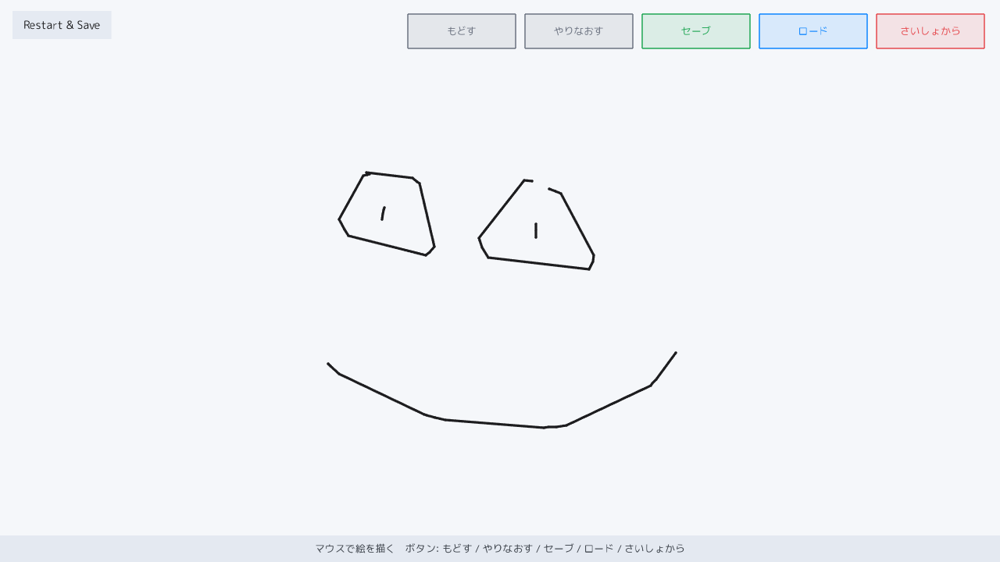
examples/restart_save）。描いた絵をセーブ・ロード・やり直し。マウスで線を描き、ボタンで もどす・やりなおす・セーブ・ロード・さいしょから を行います。もどす／やりなおすは 1 筆ごと、セーブ／ロードは今の絵をまるごとファイルへ写す・戻す、さいしょから は状態をまっさらに作り直します。
使う道具: hud.save / hud.load / hud.requestRestart / in.mouseDown
examples/restart_save/restart_save_dll.cpp ── 全 133 行。mitiru new で作るプロジェクトの src/main.cpp をこれ 1 つに置き換えれば、そのまま mitiru run で動きます。GitHub ↗
// restart_save — 描いた絵を「状態の塊」として もどす/やりなおす と セーブ/ロード する。 // 実行すると: マウスで線を描き、上のボタンで もどす / やりなおす / セーブ / ロード / さいしょから。 // 関連 API: Hud::save / load / requestRestart / マウス (in.mouseX / mouseY / mouseDown) // undo/redo と セーブ/ロードは同じ仕組み ―「状態を丸ごと控えて戻す」。undo/redo は 1 手ごとに // 控えて戻す版、セーブ/ロードはその状態をまるごとファイル (save/slot0.msav) に写す版。 #include <cstddef> // std::size_t #include <cstdint> // std::uint8_t #include <mitiru.hpp> #include <mitiru/core/FixedVec.hpp> // 点と区切りを貯める固定長の配列 #include "../common/chapter_hud.hpp" // 章ラベル + 操作帯 (全章共通の書式) using namespace mitiru; constexpr float kScreenW = 1280.0f, kScreenH = 720.0f; constexpr int kMaxPts = 2500; // 描ける点の上限 constexpr int kMaxStrokes = 200; // 描ける線 (ひと筆) の上限 = もどせる手数 // 線の 1 点。newStroke=1 なら「新しいひと筆の描き始め」(前の点とはつながない)。 struct Pt { float x = 0.0f, y = 0.0f; std::uint8_t newStroke = 0; }; // 画面上のボタン。5 個を右詰めで一列に置く。 struct Btn { float x, y, w, h; const char* label; }; constexpr float kBtnY = 18.0f, kBtnH = 44.0f, kBtnW = 138.0f, kStep = 150.0f; constexpr float kBar0 = kScreenW - 20.0f - 5.0f * kBtnW - 4.0f * 12.0f; constexpr Btn kUndo = { kBar0 + 0.0f * kStep, kBtnY, kBtnW, kBtnH, "もどす" }; constexpr Btn kRedo = { kBar0 + 1.0f * kStep, kBtnY, kBtnW, kBtnH, "やりなおす" }; constexpr Btn kSave = { kBar0 + 2.0f * kStep, kBtnY, kBtnW, kBtnH, "セーブ" }; constexpr Btn kLoad = { kBar0 + 3.0f * kStep, kBtnY, kBtnW, kBtnH, "ロード" }; constexpr Btn kReset = { kBar0 + 4.0f * kStep, kBtnY, kBtnW, kBtnH, "さいしょから" }; constexpr float kCanvasTop = 82.0f, kCanvasBot = kScreenH - 58.0f; // 描ける範囲 (ボタンと操作帯を避ける) // 「セーブした / ロードした」表示だけの一時値。ゲームの状態 (下の struct) には入れない ― 状態に // 入れるとセーブで一緒にファイルへ書かれ、ロードで復元されて「ロードしたのにセーブしたと出る」バグ // になる。保存したいのは絵だけ。見せるだけの値は状態と分ける、が save/load の勘どころ。 static float sFlash = 0.0f; // 表示の残り時間 static const char* sFlashMsg = ""; // 何をしたか (セーブした / ロードした) static Color sFlashCol = theme::kInk; // その色 static void flash(const char* msg, Color col) { sFlash = 1.2f; sFlashMsg = msg; sFlashCol = col; } struct Paint15 { FixedVec<Pt, kMaxPts> pts; // 描いた線の点 ― これ全部が絵の状態 FixedVec<int, kMaxStrokes> ends; // 各ひと筆の終わりの点数 = もどす/やりなおすの区切り int liveStrokes = 0; // いま見えているひと筆の数 (もどすで減らし、やりなおすで増やす) bool drawing = false; // いまマウスで描いている最中か bool prevDown = false; float lastX = 0.0f, lastY = 0.0f; static bool hit(const Btn& b, float mx, float my) { return mx >= b.x && mx <= b.x + b.w && my >= b.y && my <= b.y + b.h; } static bool inCanvas(float my) { return my >= kCanvasTop && my <= kCanvasBot; } static float sq(float v) { return v * v; } std::size_t livePts() const { return liveStrokes > 0 ? static_cast<std::size_t>(ends[liveStrokes - 1]) : 0; } void update(Input in, Hud hud, float dt) { const float mx = in.mouseX(), my = in.mouseY(); const bool down = in.mouseDown(0); if (down && !prevDown) // 押した瞬間: ボタンか、キャンバスかで分ける { if (hit(kUndo, mx, my)) { if (liveStrokes > 0) { --liveStrokes; } } // 1 手戻す else if (hit(kRedo, mx, my)) { if (liveStrokes < static_cast<int>(ends.size())) { ++liveStrokes; } } // 1 手進める else if (hit(kSave, mx, my)) { hud.save("slot0"); flash("セーブした", theme::kGreen); } // 今の絵をまるごとファイルへ else if (hit(kLoad, mx, my)) { hud.load("slot0"); flash("ロードした", theme::kBlue); } // ファイルから絵をまるごと戻す else if (hit(kReset, mx, my)) { hud.requestRestart(); sFlash = 0.0f; } // 状態をまっさらに作り直してもらう else if (inCanvas(my)) { // 新しいひと筆。もどして戻っていたなら、その先 (やりなおす分) を捨ててから描き足す。 ends.truncate(static_cast<std::size_t>(liveStrokes)); pts.truncate(livePts()); (void)pts.push_back({mx, my, 1}); drawing = true; lastX = mx; lastY = my; } } else if (down && drawing && inCanvas(my)) // ドラッグ中: 少し動いたら点を足す { if (sq(mx - lastX) + sq(my - lastY) > 9.0f && !pts.full()) { (void)pts.push_back({mx, my, 0}); lastX = mx; lastY = my; } } else if (!down && prevDown && drawing) // 離した = ひと筆の完成。区切りを記録して 1 手にする { if (!ends.full()) { (void)ends.push_back(static_cast<int>(pts.size())); } liveStrokes = static_cast<int>(ends.size()); drawing = false; } prevDown = down; if (sFlash > 0.0f) { sFlash -= dt; } } void draw(Screen& s) const { s.fillScreen(theme::kPaper); // 見えているひと筆までの点を描く (描いてる最中は今の筆も出す)。同じひと筆の連続する点を // 線でつなぎ、各点に小さな丸を置いて継ぎ目を滑らかにする。 const std::size_t n = drawing ? pts.size() : livePts(); for (std::size_t i = 0; i < n; ++i) { s.fillCircle(pts[i].x, pts[i].y, 1.8f, theme::kInk); if (pts[i].newStroke == 0 && i > 0) { s.drawLine(Vec2{pts[i - 1].x, pts[i - 1].y}, Vec2{pts[i].x, pts[i].y}, theme::kInk, 3.2f); } } drawBtn(s, kUndo, theme::kSubtle); drawBtn(s, kRedo, theme::kSubtle); drawBtn(s, kSave, theme::kGreen); drawBtn(s, kLoad, theme::kBlue); drawBtn(s, kReset, theme::kRed); chapterTitle(s, "Restart & Save"); if (sFlash > 0.0f) { s.text(sFlashMsg, 24.0f, 92.0f, sFlashCol, 22); } chapterControls(s, "マウスで絵を描く ボタン: もどす / やりなおす / セーブ / ロード / さいしょから"); } void drawBtn(Screen& s, const Btn& b, Color c) const { s.drawRect(b.x, b.y, b.w, b.h, c.withAlpha(0.12f)); s.drawRectFrame(Rect{b.x, b.y, b.w, b.h}, c, 1.5f); s.drawTextInRect(Rect{b.x, b.y, b.w, b.h}, b.label, c, 18.0f, Screen::TextAlignH::Center, Screen::TextAlignV::Middle); } }; // 実行: mitiru_host.exe restart_save/restart_save.dll MITIRU_GAME(Paint15);
3D シーン
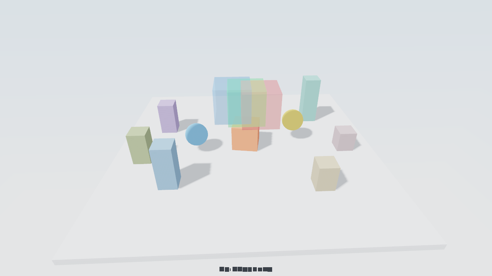
examples/scene3d）。光と影・半透明・skybox。3D も 2D と同じ draw の中で書けます。昼の空（skybox）の下、床の上を矢印キーで動く赤い立方体を、一方向の光と影つきで描きます。半透明の箱は重なっても正しく合成され、手前の不透明物には奥行きに従って隠されます。
使う道具: camera3D / light3D / skybox3D / drawMesh
examples/scene3d/scene3d_dll.cpp ── 全 86 行。mitiru new で作るプロジェクトの src/main.cpp をこれ 1 つに置き換えれば、そのまま mitiru run で動きます。GitHub ↗
// scene3d ―「3D シーンを描く」章 // 3D の描画も、2D とまったく同じ draw(Screen&) の中で書ける。 // ここでは太陽のような一方向の光と影、重なっても正しく見える半透明、空の背景を出す。 // あそびかた: 昼の空の下、床の上を矢印キーで動く赤い立方体。球 2 つが周りを回り、半透明の箱 3 枚が重なる。 // この章で使う関数: camera3D (カメラ) / light3D (光) / skybox3D (空) / drawMesh (立体を描く) #include <algorithm> #include <cmath> #include <cstdint> #include <mitiru.hpp> #include "../common/chapter_hud.hpp" // 章ラベル + 操作帯 (全章共通の書式) using namespace mitiru; // 奥行きを感じさせるために散らして立てる柱 (x, z, 高さ, 色)。 struct Pillar { float x, z, h; std::uint32_t col; }; constexpr Pillar kPillars[] = { {-4.2f, -3.0f, 2.8f, 0x4F8F86}, { 4.6f, -1.9f, 1.8f, 0x6F5FA0}, {-3.4f, 3.6f, 1.3f, 0x8C8060}, { 3.7f, 3.2f, 2.2f, 0x4C73A0}, {-5.4f, 0.5f, 1.1f, 0x84707A}, { 5.4f, 1.2f, 1.7f, 0x607048}, }; // 状態は数値だけ。毎回同じ結果になるので、ホットリロードも記録／再生もそのまま使える。 struct Scene3D { float t = 0.0f; // 経過時間 (カメラの周回・立方体の回転・球の動きに使う) float cubeX = 0.0f, cubeZ = 0.0f; // 主役の立方体の位置 void init() { t = 0.0f; cubeX = 0.0f; cubeZ = 0.0f; } void update(Input in, float dt) { t += dt; constexpr float speed = 4.5f, limit = 3.8f; // 移動の速さと、床からはみ出さないための可動範囲 if (in.down(Key::Left)) { cubeX -= speed * dt; } if (in.down(Key::Right)) { cubeX += speed * dt; } if (in.down(Key::Up)) { cubeZ -= speed * dt; } if (in.down(Key::Down)) { cubeZ += speed * dt; } cubeX = std::clamp(cubeX, -limit, limit); cubeZ = std::clamp(cubeZ, -limit, limit); } void draw(Screen& s) const { s.clear(hex(0xEAF1F8)); // 3D が使えない環境 (画面なしの自動テストなど) ではこの色のままになる (白っぽい色) // カメラは床のまわりをゆっくり周回する。光は斜め上から差す昼白色で、影はその反対側に落ちる。 const float yaw = t * 0.30f; s.camera3D({std::sin(yaw) * 13.0f, 8.5f, std::cos(yaw) * 13.0f}, {0.0f, 0.4f, 0.0f}, 54.0f); s.light3D({-0.6f, -0.95f, -0.45f}, hex(0xFFFBF2)); s.skybox3D(hex(0x63A5E8), hex(0xEAF3FB)); // 背景の空: 頭上は空色 → 地平線は白 // 床 (14x14 の薄い板)。上面がちょうど y=0 になるよう少し沈めてある ― 影を受ける面。 s.drawMesh("cube", {0.0f, -0.15f, 0.0f}, {14.0f, 0.3f, 14.0f}, {0, 0, 0}, hex(0xBFC8D4)); for (const Pillar& p : kPillars) { s.drawMesh("cube", {p.x, p.h * 0.5f, p.z}, {0.9f, p.h, 0.9f}, {0, 0, 0}, hex(p.col)); } // 主役の立方体 ― プレイヤーが動かし、Y 軸まわりに回転し、床に接して立つ。 constexpr float cs = 1.4f; s.drawMesh("cube", {cubeX, cs * 0.5f, cubeZ}, {cs, cs, cs}, {0.0f, t * 60.0f, 0.0f}, hex(0xEA5535)); for (int i = 0; i < 2; ++i) // 立方体を追いかけて周りを回る球 (青・黄) { const float a = t * 1.2f + static_cast<float>(i) * 3.14159265f; const float bob = 0.9f + std::sin(t * 2.0f + static_cast<float>(i)) * 0.35f; s.drawMesh("sphere", {cubeX + std::cos(a) * 2.7f, bob, cubeZ + std::sin(a) * 2.7f}, {1.2f, 1.2f, 1.2f}, {0, 0, 0}, (i == 0) ? hex(0x4C95F2) : hex(0xF5C842)); } // 半透明の箱 3 枚 ― 透けている面は、重なっても描いた順番に関係なく正しい色に合成される // (手前にある不透明な床や柱には、奥行きに従ってちゃんと隠される)。 s.drawMesh("cube", {-0.7f, 2.6f, 0.3f}, {1.9f, 1.9f, 1.9f}, {0, 0, 0}, hexa(0xE03B3B82)); s.drawMesh("cube", { 0.0f, 2.6f, 0.0f}, {1.9f, 1.9f, 1.9f}, {0, 0, 0}, hexa(0x3BE05B82)); s.drawMesh("cube", { 0.7f, 2.6f, -0.3f}, {1.9f, 1.9f, 1.9f}, {0, 0, 0}, hexa(0x3B7BE082)); // 2D の HUD は 3D の絵の上に重ねて描かれる。 chapterTitle(s, "3D Scene"); chapterControls(s, "矢印: 立方体をうごかす"); } }; // 実行: mitiru_host.exe scene3d/scene3d.dll MITIRU_GAME(Scene3D);
3D モデル
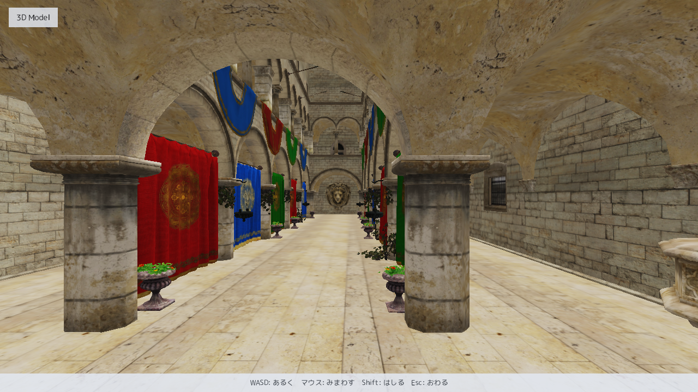
examples/model3d）。26 万ポリゴンの宮殿を一人称で歩き回る。大きな 3D モデル (.clod 形式) を drawModel 1 行で置き、その中を一人称で歩きます。舞台は実在の標準シーン Crytek Sponza (26 万ポリゴン)。マウスで見回し (カーソルは hud.lockMouse でロック)、WASD で歩き、Shift で走ります。詳細度 (LOD) は距離から GPU 上で自動で決まります。
使う道具: drawModel / camera3D / hud.lockMouse / in.mouseDeltaX / in.move
examples/model3d/model3d_dll.cpp ── 全 77 行。mitiru new で作るプロジェクトの src/main.cpp をこれ 1 つに置き換えれば、そのまま mitiru run で動きます。GitHub ↗
// model3d — 大きな 3D モデル (.clod) の中を歩く // 実行すると: 26 万ポリゴンの宮殿 (Sponza) を一人称で歩き回れる。マウスで見回し、WASD で移動 // 関連 API: drawModel / camera3D / hud.lockMouse / in.mouseDeltaX / skybox3D #include <cmath> #include <mitiru.hpp> #include "../common/chapter_hud.hpp" using namespace mitiru; // 宮殿は Crytek Sponza (CC BY 3.0、assets/sponza/CREDITS.md)。drawModel の // scale 0.01 でメートル単位の世界に置き、目の高さ 1.7m で歩く。 struct Model3D { float px = -14.0f, py = 1.7f, pz = 0.0f; // 目の位置 (m) float yawDeg = 90.0f; // 視線の左右 (90 = +X の廊下方向) float pitchDeg = 0.0f; // 視線の上下 void init() { px = -14.0f; py = 1.7f; pz = 0.0f; yawDeg = 90.0f; pitchDeg = 0.0f; } void update(Input in, Hud hud, float dt) { if (in.pressed(Key::Escape)) { hud.quit(); } // Esc で終わる hud.lockMouse(); // 毎フレーム宣言でカーソルをロック (FPS 視線) // マウスで見回す。上下は真上・真下の手前で止める constexpr float sens = 0.15f; // 1px あたりの回転角 (度) yawDeg -= in.mouseDeltaX() * sens; pitchDeg -= in.mouseDeltaY() * sens; if (pitchDeg > 89.0f) { pitchDeg = 89.0f; } if (pitchDeg < -89.0f) { pitchDeg = -89.0f; } // WASD で視線の向きへ歩く (in.move() が WASD/矢印/スティックを合成する) constexpr float kDeg = 3.14159265f / 180.0f; const float fx = std::sin(yawDeg * kDeg), fz = std::cos(yawDeg * kDeg); const float rx = -fz, rz = fx; // 視線の右手方向 const Stick m = in.move(); const float speed = in.down(Key::Shift) ? 6.0f : 3.0f; // m/s (Shift で走る) px += (fx * -m.y + rx * m.x) * speed * dt; pz += (fz * -m.y + rz * m.x) * speed * dt; // 壁の外へ出ない範囲に収める (この章は当たり判定を持たない) if (px < -17.5f) { px = -17.5f; } if (px > 16.5f) { px = 16.5f; } if (pz < -10.0f) { pz = -10.0f; } if (pz > 9.5f) { pz = 9.5f; } } void draw(Screen& s) const { s.clear(hex(0xDCE9F5)); // 3D が使えない環境 (画面なしの自動テストなど) ではこの色のまま // 視線の向きを目の位置 + 単位ベクトルで camera3D に渡す constexpr float kDeg = 3.14159265f / 180.0f; const float cp = std::cos(pitchDeg * kDeg); const float dx = std::sin(yawDeg * kDeg) * cp; const float dy = std::sin(pitchDeg * kDeg); const float dz = std::cos(yawDeg * kDeg) * cp; s.camera3D({px, py, pz}, {px + dx, py + dy, pz + dz}, 70.0f); s.light3D({-0.4f, -0.85f, -0.3f}, hex(0xFFF4E0)); s.skybox3D(hex(0x6FA8E4), hex(0xF2F6FA)); // 26 万ポリゴンの宮殿を 1 行で。詳細度 (LOD) は距離から自動で決まる s.drawModel("model3d/assets/sponza/sponza.clod", {0.0f, 0.0f, 0.0f}, 0.0f, 0.01f); chapterTitle(s, "3D Model"); chapterControls(s, "WASD: あるく マウス: みまわす Shift: はしる Esc: おわる"); } }; // 実行: mitiru_host.exe model3d/model3d.dll MITIRU_GAME(Model3D);